Domain 2
Asset Security
CHAPTER
2
Asset Security
This chapter presents the following:
- Information life cycle
- Information classification and protection
- Information ownership
- Protection of privacy
- Information retention
- Data security controls
- Data handling requirements
Information is the oil of the 21st century.
—Peter Sondergaard
An asset is, by definition, anything of worth to an organization. This includes people, partners, equipment, facilities, reputation, and information. While every asset needs to be protected, as discussed in Chapter 1 in the context of risk management, this chapter’s coverage of the second CISSP domain focuses exclusively on protecting information assets. Information is typically the most valuable asset to an organization and lies at the heart of every information system, so precision focus on its protection makes a lot of sense.
Information, of course, exists in context; it is acquired or created at a particular point in time through a specific process and (usually) for a purpose. It moves through an organization’s information systems, sometimes adding value to processes and sometimes waiting to be useful. Eventually, the information outlives its utility and must be disposed of appropriately. We start off our discussion of asset security by examining an information life-cycle model that applies to most organizations, as well as specific examples. We will then cover the evaluation, use, maintenance, and destruction of the information in the context of its life cycle. This all sets the stage for a discussion of the various organizational roles that deal with information assets, as well as the need for effective retention policies. Finally, we discuss specific threats to information and what controls can be helpful in mitigating the risks of data loss.
Information Life Cycle
A life-cycle model describes the changes that an entity experiences during its lifetime. Unlike biological systems, information cannot really be said to reproduce, but it can beget other information in a process that is not totally unlike reproduction. Think of entries in a customer relationship management (CRM) information system. A sales lead can be useful in and of itself by being converted into one or more sales, but it can also lead to the acquisition of other leads. These, in turn, can be thought of as having been spawned or descended from the first or parent lead. Eventually, the lead is no longer useful (e.g., the person moves on or the company goes belly up) and becomes a liability that occupies storage space and needlessly increases exposure in the event of a data breach. You would want to properly dispose of that information when its costs and risks exceed any possible benefits. There are a number of information life-cycle models out there. The one we will use for our discussion of asset security is fairly simple but still effective when considering the changing nature of information and the security implications of those dynamics. At a macro level, we can divide the life of our information into four phases: acquisition, use, archival, and disposal. See Figure 2-1.
Acquisition
Generally speaking, information is acquired by an organization in only one of two ways: copied from elsewhere or created from scratch. Copying is by far the most common approach to acquiring new information. Think about it: unless your organization is heavily involved in research and development, odds are that the information it acquires already exists somewhere else. After the information is acquired, but before it can be used, there are steps we must take to make the information useful. Typically, we attach both system metadata (e.g., author, date/time of creation, and permissions) and business process metadata (e.g., classification, project, and owner) to it. Finally, the information is indexed to facilitate searching and assigned to one or more data stores. In smaller organizations, much of this
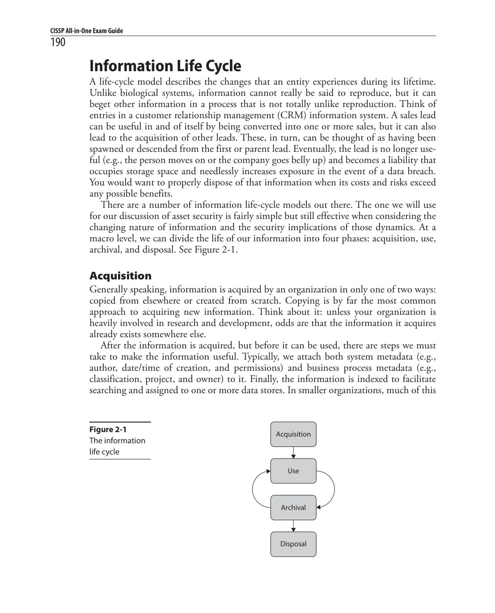
Figure 2-1
process is invisible to the user. All that person knows is that when they create a contact in the CRM, an order in the purchasing system, or a ticket in the workflow system, the entry is magically available to everyone in the organization who needs to access the information. In larger organizations, the process needs to be carefully architected. Finally, there are policy controls that we have to apply. For instance, we have to encrypt credit card numbers and certain other personally identifiable information (PII) wherever we store them. We also have to implement strict controls on who gets to access sensitive information. Additionally, we may have to provide some sort of roll-back capability to revert data to a previous state, particularly if users or processes may be able to corrupt it. These and many other important considerations must be deliberately addressed at the point of information acquisition and not as an afterthought.
Use
After the information is prepared and stored, it will spend much of its time being used. That is to say it will be read and modified by a variety of users with the necessary access level. From a security perspective, this stage in the information life cycle presents the most challenges in terms of ensuring confidentiality, integrity, and availability. You want the information available, but only to the right people who should then be able to modify it in authorized ways. As the information is being used, we have to ensure that it remains internally consistent. For instance, if we have multiple data stores for performance or reliability purposes, we must ensure that modifications to the information are replicated. We also need to have mechanisms for automatically resolving inconsistencies, such as those that would occur from a server having a power outage after information has been modified but before it has been replicated. This is particularly important in very dynamic systems that have roll-back capabilities. Consistency is also an issue with regard to policy and regulatory compliance. As the information is used and aggregated, it may trigger requirements that must be automatically enforced. For example, a document that refers to a project using a code word or name may be unclassified and freely available, but if that word/name is used in conjunction with other details (a place, purpose, or team members’ names), then it would make the entire document classified. Changes in the information as it is in use must be mapped to the appropriate internal policies, and perhaps to regulations or laws.
Archival
The information in our systems will likely stop being used regularly (or at all) at some point. When this happens, but before we get rid of it, we probably want to retain it for a variety of reasons. Maybe we anticipate that it will again be useful at a later time, or maybe we are required to keep it around for a certain period of time, as is the case with certain financial information. Whatever the reason for moving this data off to the side, the fact that it is no longer regularly used could mean that unauthorized or accidental access and changes to it could go undetected for a long time if we don’t implement appropriate controls. Of course, the same lack of use could make it easier to detect this threat if we do have the right controls.
Another driver for retention is the need for backups. Whether we’re talking about user or back-end backups, it is important to consider our risk assessment when deciding which backups are protected and how. To the extent that end-user backups are performed to removable disk drives, it is difficult to imagine a scenario in which these backups should not be encrypted. Every major operating system provides a means to perform automatic backups as well as encrypt those backups. Let’s take advantage of this. This all leads us to the question of how long we need to retain data. If we discard it too soon, we risk not being able to recover from a failure or an attack. We also risk not being able to comply with e-discovery requests or subpoenas. If we keep the data for too long, we risk excessive costs as well as increased liabilities. The answer, once again, is that this is all part of our risk management process and needs to be codified in policies.
Backup vs. Archive
The terms backup and archive are sometimes used interchangeably. In reality, they have different meanings that are best illustrated using the life-cycle model described in this section. A databackupis a copy of a data set currently in use that is made for the purpose of recovering from the loss of the original data. Backup data normally becomes less useful as it gets older. A dataarchiveis a copy of a data set that is no longer in use, but is kept in case it is needed at some future point. When data is archived, it is usually removed from its original location so that the storage space is available for data in use.
Disposal
Sooner or later, every organization will have to dispose of data. This usually, but not always, means data destruction. Old mailboxes, former employee records, and past financial transactions are all examples of data sets that must, at some point, be destroyed. When this time comes, there are two important issues to consider: that the data does in fact get destroyed, and that it is destroyed correctly. When we discuss roles and responsibilities later in this chapter, we’ll see who is responsible for ensuring that both of these issues are taken care of. A twist on the data destruction issue is when we need to transfer the data to another party and then destroy it on our data stores. For instance, organizations hosting services for their clients typically have to deal with requests to do a bulk export of their data when they migrate to another provider. Companies sometimes sell accounts (e.g., home mortgages) to each other, in which case the data is transferred and eventually (after the mandatory retention period) destroyed on the original company’s systems. No matter the reason, we have to ensure the data is properly destroyed. How this is done is, again, tied to our risk management. The bottom line is that it must be rendered sufficiently difficult for an adversary to recover so that the risk of such recovery is acceptable to our organization. This is not hard to do when we are dealing with physical
devices such as hard disk drives that can be wiped, degaussed, or shredded (or all the above in particularly risk-adverse organizations such as certain government entities). Data destruction can be a bit more complicated when we deal with individual files (or parts thereof ) or database records (such as many e-mail systems use for mailbox storage). Further complicating matters, it is very common for multiple copies of each data item to exist across our information systems. How can you ensure that all versions are gone? The point is that the technical details of how and where the data is stored are critical to ensuring its proper destruction.
Information Classification
An important metadata item that should be attached to all our information is a classification level. This classification tag, which remains attached (and perhaps updated) throughout the life cycle of the information, is important to determining the protective controls we apply to the information. The rationale behind assigning values to different types of data is that it enables a company to gauge the amount of funds and resources that should go toward protecting each type of data, because not all data has the same value to a company. After identifying all important information, it should be properly classified. A company copies and creates a lot of information that it must maintain, so classification is an ongoing process and not a one-time effort. Information can be classified by sensitivity, criticality, or both. Either way, the classification aims to quantify how much loss an organization would likely suffer if the information was lost. Thesensitivityof information is commensurate with the losses to an organization if that information was revealed to unauthorized individuals. This kind of compromise has made headlines in recent years with the losses of information suffered by organizations such as the National Security Agency, the Office of Personnel Management, and even websites like Ashley Madison. In each case, the organizations lost trust and had to undertake expensive responses because sensitive data was compromised. Thecriticalityof information, on the other hand, is an indicator of how the loss of the information would impact the fundamental business processes of the organization. In other words, critical information is that which is essential for the organization to continue operations. For example, Code Spaces, a company that provided code repository services, was forced to shut down in 2014 after an unidentified individual or group deleted its code repositories. This data was critical to the operations of the company and without it, the corporation had no choice but to go out of business. Once data is segmented according to its sensitivity or criticality level, the company can decide what security controls are necessary to protect different types of data. This ensures that information assets receive the appropriate level of protection, and classifications indicate the priority of that security protection. The primary purpose of data classification is to indicate the level of confidentiality, integrity, and availability protection that is required for each type of data set. Many people mistakenly only consider the confidentiality aspects of data protection, but we need to make sure our data is not modified in an unauthorized manner and that it is available when needed.
Data classification helps ensure that data is protected in the most cost-effective manner. Protecting and maintaining data costs money, but spending money for the information that actually requires protection is important. If you were in charge of making sure Russia does not know the encryption algorithms used when transmitting information to and from U.S. spy satellites, you would use more extreme (and expensive) security measures than you would use to protect your peanut butter and banana sandwich recipe from your next-door neighbor. Each classification should have separate handling requirements and procedures pertaining to how that data is accessed, used, and destroyed. For example, in a corporation, confidential information may be accessed only by senior management and a select few trusted employees throughout the company. Accessing the information may require two or more people to enter their access codes. Auditing could be very detailed and its results monitored daily, and paper copies of the information may be kept in a vault. To properly erase this data from the media, degaussing or overwriting procedures may be required. Other information in this company may be classified as sensitive, allowing a slightly larger group of people to view it. Access control on the information classified as sensitive may require only one set of credentials. Auditing happens but is only reviewed weekly, paper copies are kept in locked file cabinets, and the data can be deleted using regular measures when it is time to do so. Then, the rest of the information is marked public. All employees can access it, and no special auditing or destruction methods are required.
Each classification level should have its own handling and destruction requirements.
Classifications Levels
There are no hard and fast rules on the classification levels that an organization should use. An organization could choose to use any of the classification levels presented in Table 2-1. One organization may choose to use only two layers of classifications, while another company may choose to use four. Table 2-1 explains the types of classifications available. Note that some classifications are more commonly used for commercial businesses, whereas others are military classifications. The following shows the common levels of sensitivity from the highest to the lowest for commercial business:
Confidential
- Private
- Sensitive
- Public
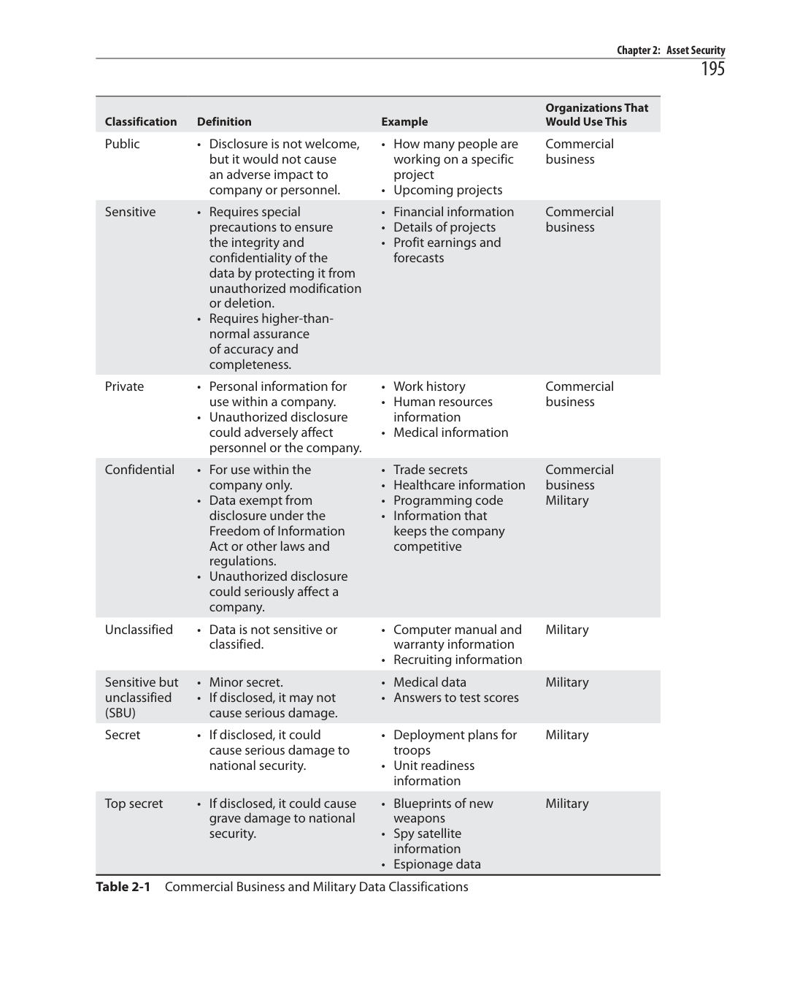
Public•Disclosure is not welcome,•How many people areCommercial
The following shows the levels of sensitivity from the highest to the lowest for military purposes:
Top secret
- Secret
- Confidential
- Sensitive but unclassified
- Unclassified
- The classifications listed in Table 2-1 arecommonlyused in the industry, but there is a lot of variance. An organization first must decide the number of data classifications that best fit its security needs, then choose the classification naming scheme, and then define what the names in those schemes represent. Company A might use the classification level “confidential,” which represents its most sensitive information. Company B might use “top secret,” “secret,” and “confidential,” where confidential represents its least sensitive information. Each organization must develop an information classification scheme that best fits its business and security needs.
The terms “unclassified,”“secret,” and “top secret” are usually associated with governmental organizations. The terms “private,” “proprietary,” and “sensitive” are usually associated with nongovernmental organizations. It is important to not go overboard and come up with a long list of classifications, which will only cause confusion and frustration for the individuals who will use the system. The classifications should not be too restrictive and detailed oriented either, because many types of data may need to be classified. Each classification should be unique and separate from the others and not have any overlapping effects. The classification process should also outline how information is controlled and handled through its life cycle (from creation to termination).
An organization must make sure that whoever is backing up classified data—and whoever has access to backed-up data—has the necessary clearance level. A large security risk can be introduced if low-level technicians with no security clearance have access to this information during their tasks. Once the scheme is decided upon, the organization must develop the criteria it will use to decide what information goes into which classification. The following list shows some criteria parameters an organization may use to determine the sensitivity of data: The usefulness of data
- The value of data
- The age of data
- The level of damage that could be caused if the data were disclosed
- The level of damage that could be caused if the data were modified or corrupted
- Legal, regulatory, or contractual responsibility to protect the data
- Effects the data has on security
- Who should be able to access the data
- Who should maintain the data
- Who should be able to reproduce the data
- Lost opportunity costs that could be incurred if the data were not available or
- were corrupted
Data is not the only thing that may need to be classified. Applications and sometimes whole systems may need to be classified. The applications that hold and process classified information should be evaluated for the level of protection they provide. You do not want a program filled with security vulnerabilities to process and “protect” your most sensitive information. The application classifications should be based on the assurance (confidence level) the company has in the software and the type of information it can store and process.
The classification rules must apply to data no matter what format it is in: digital, paper, video, fax, audio, and so on.
Now that we have chosen a sensitivity scheme, the next step is to specify how each classification should be dealt with. We must specify provisions for access control, identification, and labeling, along with how data in specific classifications is stored, maintained, transmitted, and destroyed. We also must iron out auditing, monitoring, and compliance issues. Each classification requires a different degree of security and, therefore, different requirements from each of the mentioned items.
Classification Controls
As mentioned earlier, which types of controls are implemented per classification depends upon the level of protection that management and the security team have determined is needed. The numerous types of controls available are discussed throughout this book. But some considerations pertaining to sensitive data and applications are common across most organizations:
Strict and granular access control for all levels of sensitive data and programs
- Encryption of data while stored and while in transmission
- Auditing and monitoring (determine what level of auditing is required and how
- long logs are to be retained)
Separation of duties (determine whether two or more people must be involved
- in accessing sensitive information to protect against fraudulent activities; if so, define and document procedures)
Periodic reviews (review classification levels, and the data and programs that
- adhere to them, to ensure they are still in alignment with business needs; data or applications may also need to be reclassified or declassified, depending upon thesituation)
Backup and recovery procedures (define and document)
- Change control procedures (define and document)
- Physical security protection (define and document)
- Information flow channels (where does the sensitive data reside and how does it
- transverse the network)
Proper disposal actions, such as shredding, degaussing, and so on
- (define and document)
Marking, labeling, and handling procedures
Data Classification Procedures
The following outlines the necessary steps for a proper classification program:
1.Define classification levels. 2.Specify the criteria that will determine how data is classified. 3.Identify data owners who will be responsible for classifying data. 4.Identify the data custodian who will be responsible for maintaining data and its security level. 5.Indicate the security controls, or protection mechanisms, required for each classification level. 6.Document any exceptions to the previous classification issues. 7.Indicate the methods that can be used to transfer custody of the information to a different data owner. 8.Create a procedure to periodically review the classification and ownership. Communicate any changes to the data custodian. 9.Indicate procedures for declassifying the data. 10.Integrate these issues into the security-awareness program so all employees understand how to handle data at different classification levels.
Layers of Responsibility
Senior management and other levels of management understand the vision of the company, the business goals, and the objectives. The next layer down is the functional management, whose members understand how their individual departments work, what roles individuals play within the company, and how security affects their department directly. The next layers are operational managers and staff. These layers are closer to the actual operations of the company. They know detailed information about the technical and procedural requirements, the systems, and how the systems are used. The employees at these layers understand how security mechanisms integrate into systems, how to configure them, and how they affect daily productivity. Every layer offers different insight into what type of role security plays within an organization, and each should have input into the best security practices, procedures, and chosen controls to ensure the agreed-upon security level provides the necessary amount of protection without negatively affecting the company’s productivity.
Senior management always carries the ultimate responsibility for the organization.
Although each layer is important to the overall security of an organization, some specific roles must be clearly defined. Individuals who work in smaller environments (where everyone must wear several hats) may get overwhelmed with the number of roles presented next. Many commercial businesses do not have this level of structure in their security teams, but many government agencies and military units do. What you need to understand are the responsibilities that must be assigned and whether they are assigned to just a few people or to a large security team. These roles are the board of directors, security officer, data owner, data custodian, system owner, security administrator, security analyst, application owner, supervisor (user manager), change control analyst, data analyst, process owner, solution provider, user, product line manager, and the guy who gets everyone coffee.
Executive Management
The individuals designated as executive management typically are those whose titles start with “chief,” and collectively they are often referred to as the “C-suite.” Executive leaders are ultimately responsible for everything that happens in their organizations, and as such are considered the ultimate business and function owners. This has been evidenced time and again (as we will see shortly) in high-profile cases wherein executives have been fired, sued, or even prosecuted for organizational failures or fraud that occurred under their leadership. Let’s start at the top of a corporate entity, the CEO.
Chief Executive Officer
Thechief executive officer (CEO)has the day-to-day management responsibilities of an organization. This person is often the chairperson of the board of directors and is the
highest-ranking officer in the company. This role is for the person who oversees the company’s finances, strategic planning, and operations from a high level. The CEO is usually seen as the visionary for the company and is responsible for developing and modifying the company’s business plan. The CEO sets budgets, forms partnerships, decides on what markets to enter, what product lines to develop, how the company will differentiate itself, and so on. This role’s overall responsibility is to ensure that the company grows and thrives.
The CEO can delegate tasks, but not necessarily responsibility. More and more regulations dealing with information security are holding the CEO accountable for ensuring the organization practices due care and due diligence with respect to information security, which is why security departments across the land are receiving more funding. Personal liability for the decision makers and purse-string holders has loosened those purse strings, and companies are now able to spend more money on security thanbefore.
Chief Financial Officer
Thechief financial officer (CFO)is responsible for the corporation’s accounting and financial activities and the overall financial structure of the organization. This person is responsible for determining what the company’s financial needs will be and how to finance those needs. The CFO must create and maintain the company’s capital structure, which is the proper mix of equity, credit, cash, and debt financing. This person oversees forecasting and budgeting and the processes of submitting quarterly and annual financial statements to the Securities and Exchange Commission (SEC) and stakeholders.
Executives Behind Bars
The CFO and CEO are responsible for informing stakeholders (creditors, analysts, employees, management, investors) of the firm’s financial condition and health. After the corporate debacles at Enron, Adelphia, Tyco, and WorldCom uncovered in 2001–2002, the U.S. government and the SEC started doling out stiff penalties to people who held these roles and abused them. The following list provides a sampling of some of the cases in the past decade:
January 2007Former Cendant Corporation CEO Walter Forbes is
- sentenced to over 12 years in prison and ordered to pay over $3 billion in restitution after being found guilty of conspiracy to commit securities fraud.
March 2012The former CEO of the Stanford Financial Group, R. Allen
- Stanford, was sentenced to 110 years in prison for defrauding investors out of $7billion.
June 2015Joe White, the former CFO of Shelby Regional Medical
- Center, was sentenced to 23 months in federal prison after making false claims to receive payments under the Medicare Electronic Health Record Incentive Program.
August 2015Former Chief Financial Officer of the Lawrence Family
- Jewish Community Center in California, Nancy Johnson was sentenced to over a year in jail for embezzling over $400,000.
September 2015KIT Digital’s former CEO Kaleil Isaza Tuzman and
- his former CFO Robin Smyth were arrested and charged with accounting fraud. They face up to 20 years in jail if convicted.
December 2015Martin Shkreli, a notorious pharmaceutical executive,
- was charged with securities fraud stemming from his alleged use of funds from new companies to pay down debts previously incurred by financially troubled companies. If convicted, he faces a maximum sentence of 20 years.
These are only some of the big cases that made it into the headlines. Other CEOs and CFOs have also received punishments for “creative accounting” and fraudulent activities.
Chief Information Officer
Thechief information officer (CIO)may report to either the CEO or CFO, depending upon the corporate structure, and is responsible for the strategic use and management of information systems and technology within the organization. Over time, this position has become more strategic and less operational in many organizations. CIOs oversee and are responsible for the day-in-day-out technology operations of a company, but because organizations are so dependent upon technology, CIOs are being asked to sit at the corporate table more and more. CIO responsibilities have extended to working with the CEO (and other management) on business-process management, revenue generation, and how business strategy can be accomplished with the company’s underlying technology. This person usually should have one foot in techno-land and one foot in business-land to be effective because she is bridging two very different worlds. The CIO sets the stage for the protection of company assets and is ultimately responsible for the success of the company security program. Direction should be coming down from the CEO, and there should be clear lines of communication between the board of directors, the C-level staff, and mid-management. The Sarbanes–Oxley Act (SOX), introduced in Chapter 1, prescribes to the CEO and CFO financial reporting responsibilities and includes penalties and potentialpersonalliability for failure to comply. SOX gave the SEC more authority to create regulations that ensure these officers cannot simply pass
along fines to the corporation for personal financial misconduct. Under SOX, they can personally be fined millions of dollars and/or go to jail.
Chief Privacy Officer
Thechief privacy officer (CPO)is a newer position, created mainly because of the increasing demands on organizations to protect a long laundry list of different types of data. This role is responsible for ensuring that customer, company, and employee data is kept safe, which keeps the company out of criminal and civil courts and hopefully out of the headlines. This person is usually an attorney and is directly involved with setting policies on how data is collected, protected, and given out to third parties. The CPO often reports to the chief security officer. It is important that the CPO understand the privacy, legal, and regulatory requirements the organization must comply with. With this knowledge, the CPO can then develop the organization’s policies, standards, procedures, controls, and contract agreements to ensure that privacy requirements are being properly met. Remember also that organizations are responsible for knowing how their suppliers, partners, and other third parties are protecting this sensitive information. The CPO may be responsible for reviewing the data security and privacy practices of these other parties. Some companies have carried out risk assessments without including the penalties and ramifications they would be forced to deal with if they do not properly protect the information they are responsible for. Without including these liabilities, risk cannot be properly assessed. The organization should document how privacy data is collected, used, disclosed, archived, and destroyed. Employees should be held accountable for not following the organization’s standards on how to handle this type of information.
Privacy
Privacy is different from security.Privacyindicates the amount of control an individual should be able to have and expect to have as it relates to the release of their own sensitive information.Securityrefers to the mechanisms that can be put into place to provide this level of control. It is becoming more critical (and more difficult) to protect PII because of the increase of identity theft and financial fraud threats. PII is a combination of identification elements (name, address, phone number, account number, etc.). Organizations must have privacy policies and controls in place to protect their employee and customer PII.
Chief Security Officer
Thechief security officer (CSO)is responsible for understanding the risks that the company faces and for mitigating these risks to an acceptable level. This role is responsible for understanding the organization’s business drivers and for creating and maintaining a
security program that facilitates these drivers, along with providing security, compliance with a long list of regulations and laws, and any customer expectations or contractual obligations. The creation of this role is a mark in the “win” column for the security industry because it means security is finally being seen as a business issue. Previously, security was relegated to the IT department and was viewed solely as a technology issue. As organizations began to recognize the need to integrate security requirements and business needs, creating a position for security in the executive management team became more of a necessity. The CSO’s job is to ensure that business is not disrupted in any way due to security issues. This extends beyond IT and reaches into business processes, legal issues, operational issues, revenue generation, and reputation protection.
CSO vs. CISO
The CSO and CISO may have similar or very different responsibilities, depending on the individual organization. In fact, an organization may choose to have both, either, or neither of these roles. It is up to an organization that has either or both of these roles to define their responsibilities. By and large, the CSO role usually has a further-reaching list of responsibilities compared to the CISO role. The CISO is usually focused more on technology and has an IT background. The CSO usually is required to understand a wider range of business risks, including physical security, not just technological risks. The CSO is usually more of a businessperson and typically is present in larger organizations. If a company has both roles, the CISO reports directly to the CSO. The CSO is commonly responsible for ensuringconvergence, which is the formal cooperation between previously disjointed security functions. This mainly pertains to physical and IT security working in a more concerted manner instead of working in silos within the organization. Issues such as loss prevention, fraud prevention, business continuity planning, legal/regulatory compliance, and insurance all have physical security and IT security aspects and requirements. So one individual (CSO) overseeing and intertwining these different security disciplines allows for a more holistic and comprehensive security program.
Data Owner
Thedata owner(information owner) is usually a member of management who is in charge of a specific business unit, and who is ultimately responsible for the protection and use of a specific subset of information. The data owner has due care responsibilities and thus will be held responsible for any negligent act that results in the corruption or disclosure of the data. The data owner decides upon the classification of the data she is responsible for and alters that classification if the business need arises. This person is also responsible for ensuring that the necessary security controls are in place, defining security requirements per classification and backup requirements, approving
any disclosure activities, ensuring that proper access rights are being used, and defining user access criteria. The data owner approves access requests or may choose to delegate this function to business unit managers. And the data owner will deal with security violations pertaining to the data she is responsible for protecting. The data owner, who obviously has enough on her plate, delegates responsibility of the day-to-day maintenance of the data protection mechanisms to the data custodian.
Data ownership takes on a different meaning when outsourcing data storage requirements. You may want to ensure that the service contract includes a clause to the effect that all data is and shall remain the sole and exclusive property of your organization.
Data Custodian
Thedata custodian(information custodian) is responsible for maintaining and protecting the data. This role is usually filled by the IT or security department, and the duties include implementing and maintaining security controls; performing regular backups of the data; periodically validating the integrity of the data; restoring data from backup media; retaining records of activity; and fulfilling the requirements specified in the company’s security policy, standards, and guidelines that pertain to information security and data protection.
System Owner
Thesystem owneris responsible for one or more systems, each of which may hold and process data owned by different data owners. A system owner is responsible for integrating security considerations into application and system purchasing decisions and development projects. The system owner is responsible for ensuring that adequate security is being provided by the necessary controls, password management, remote access controls, operating system configurations, and so on. This role must ensure the systems are properly assessed for vulnerabilities and must report any to the incident response team and data owner.
Data Owner Issues
Each business unit should have a data owner who protects the unit’s most critical information. The company’s policies must give the data owners the necessary authority to carry out their tasks. This is not a technical role, but rather a business role that must understand the relationship between the unit’s success and the protection of this critical asset. Not all businesspeople understand this role, so they should be given the necessary training.
Security Administrator
Thesecurity administratoris responsible for implementing and maintaining specific security network devices and software in the enterprise. These controls commonly include firewalls, an intrusion detection systems (IDS), intrusion prevention system (IPS), antimalware, security proxies, data loss prevention, etc. It is common for a delineation to exist between the security administrator’s responsibilities and the network administrator’s responsibilities. The security administrator has the main focus of keeping the network secure, and the network administrator has the focus of keeping things up and running. A security administrator’s tasks commonly also include creating new system user accounts, implementing new security software, testing security patches and components, and issuing new passwords. The security administrator must make sure access rights given to users support the policies and data owner directives.
Supervisor
Thesupervisorrole, also calleduser manager, is ultimately responsible for all user activity and any assets created and owned by these users. For example, suppose Kathy is the supervisor of ten employees. Her responsibilities would include ensuring that these employees understand their responsibilities with respect to security; making sure the employees’ account information is up to date; and informing the security administrator when an employee is fired, suspended, or transferred. Any change that pertains to an employee’s role within the company usually affects what access rights they should and should not have, so the user manager must inform the security administrator of these changes immediately.
Change Control Analyst
Since the only thing that is constant is change, someone must make sure changes happen securely. Thechange control analystis responsible for approving or rejecting requests to make changes to the network, systems, or software. This role must make certain that the change will not introduce any vulnerabilities, that it has been properly tested, and that it is properly rolled out. The change control analyst needs to understand how various changes can affect security, interoperability, performance, and productivity.
Data Analyst
Having proper data structures, definitions, and organization is very important to a company. Thedata analystis responsible for ensuring that data is stored in a way that makes the most sense to the company and the individuals who need to access and work with it. For example, payroll information should not be mixed with inventory information; the purchasing department needs to have a lot of its values in monetary terms; and the inventory system must follow a standardized naming scheme. The data analyst may be responsible for architecting a new system that will hold company information or advise in the purchase of a product that will do so. The data analyst works with the data owners to help ensure that the structures set up coincide with and support the company’s business objectives.
User
Theuseris any individual who routinely uses the data for work-related tasks. The user must have the necessary level of access to the data to perform the duties within their position and is responsible for following operational security procedures to ensure the data’s confidentiality, integrity, and availability to others.
Auditor
The function of theauditoris to periodically check that everyone is doing what they are supposed to be doing and to ensure the correct controls are in place and are being maintained securely. The goal of the auditor is to make sure the organization complies with its own policies and the applicable laws and regulations. Organizations can have internal auditors and/or external auditors. The external auditors commonly work on behalf of a regulatory body to make sure compliance is being met. While many security professionals fear and dread auditors, they can be valuable tools in ensuring the overall security of the organization. Their goal is to find the things you have missed and help you understand how to fix the problems.
Why So Many Roles?
Most organizations will not have all the roles previously listed, but what is important is to build an organizational structure that contains the necessary roles and map the correct security responsibilities to them. This structure includes clear definitions of responsibilities, lines of authority and communication, and enforcement capabilities. A clear-cut structure takes the mystery out of who does what and how things are handled in differentsituations.
Retention Policies
There is no universal agreement on how long an organization should retain data. Legal and regulatory requirements (where they exist) vary among countries and business sectors. What is universal is the need to ensure your organization has and follows a documented data retention policy. Doing otherwise is flirting with disaster, particularly when dealing with pending or ongoing litigation. It is not enough, of course, to simply have a policy; you must ensure it is being followed, and you must document this through regular audits.
When outsourcing data storage, it is important to specify in the contract language how long the storage provider will retain your data after you stop doing business with them and what process they will use to eradicate your data from their systems. A very straightforward and perhaps tempting approach would be to look at the lengthiest legal or regulatory retention requirement imposed on your organization and then apply that timeframe to all your data retention. The problem with this approach
is that it will probably make your retained data set orders of magnitude greater than it needs to be. Not only does this impose additional storage costs, but it also makes it more difficult to comply with electronic discovery (e-discovery) orders. When you receive an e-discovery order from a court, you are typically required to produce a specific amount of data (usually pretty large) within a given timeframe (usually very short). Obviously, the more data you retain, the more difficult and expensive this process will be. A better approach is to segregate the specific data sets that have mandated retention requirements and handle those accordingly. Everything else should have a retention period that minimally satisfies the business requirements. You probably will find that different business units within medium and large organizations will have different retention requirements. For instance, a company may want to keep data from its research and development (R&D) division for a much longer period than it keeps data from its customer service division. R&D projects that are not particularly helpful today may be so at a later date, but audio recordings of customer service calls probably don’t have to hang around for a few years.
Be sure to get buy-in from your legal counsel when developing or modifying data retention and privacy policies.
Developing a Retention Policy
At its core, every data retention policy answers three fundamental questions:
What data do we keep?
- How long do we keep this data?
- Where do we keep this data?
- Most security professionals understand the first two questions. After all, many of us are used to keeping tax records for three years in case we get audited. The “what” and the “how long” are easy. The last question, however, surprises more than a few of us. The twist is that the question is not so much about the location per se, but rather the manner in which the data is kept at that location. In order to be useful to us, retained data must be easy to locate and retrieve. Think about it this way. Suppose your organization had a business transaction with Acme Corporation in which you learned that they were involved in the sale of a particular service to a client in another country. Two years later, you receive a third-party subpoena asking for any information you may have regarding that sale. You know you retain all your data for three years, but you have no idea where the relevant data may be. Was it an e-mail, a recording of a phone conversation, the minutes from a meeting, or something else? Where would you go looking for it? Alternatively, how could you make a case to the court that providing the data would be too costly for your organization?
How We Retain
In order for retained data to be useful, it must be accessible in a timely manner. It really does us no good to have data that takes an inordinate (and perhaps prohibitive) amount of effort to query. To ensure this accessibility, we need to consider various issues, including the ones listed here.
TaxonomyA taxonomy is a scheme for classifying data. This classification
- can be made using a variety of categories, including functional (e.g., human resources, product development), chronological (e.g., 2015), organizational (e.g., executives, union employees), or any combination of these or other categories. ClassificationThe sensitivity classification of the data will determine the
- controls we place on it both while it is in use and when it gets archived. This is particularly important because many organizations protect sensitive information while in use, but not so much after it goes into the archives. NormalizationRetained data will come in a variety of formats, including word
- processing documents, database records, flat files, images, PDF files, video, and so on. Simply storing the data in its original format will not suffice in any but the most trivial cases. Instead, we need to develop tagging schemas that will make the data searchable. IndexingRetained data must be searchable if we are to quickly pull out specific
- items of interest. The most common approach to making data searchable is to build indexes for it. Many archiving systems implement this feature, but others do not. Either way, the indexing approach must support the likely future queries on the archived data.
Ideally, archiving occurs in a centralized, regimented, and homogenous manner. We all know, however, that this is seldom the case. We may have to compromise in order to arrive at solutions that meet our minimum requirements within our resource constraints. Still, as we plan and execute our retention strategies, we must remain focused on how we will efficiently access archived data many months or years later.
How Long We Retain
Once upon a time, there were two main data retention longevity approaches: the “keep nothing” camp and the “keep everything” camp. As the legal processes caught up with modern computer technology, it became clear that (except in very limited cases) these approaches were not acceptable. For starters, whether they retained nothing or everything, organizations following one of these extreme approaches found out it was difficult to defend themselves in lawsuits. The first group had nothing with which to show due diligence, for instance, while those in the second group had too much information that plaintiffs could use against them. So what is the right data retention policy? Ask your legal counsel. Seriously. There are myriads of statutory and regulatory retention requirements, which vary from jurisdiction to jurisdiction (sometimes even within the same country). There are also best practices and case law to consider, so we won’t attempt to get too specific here.
Still, the following are some general guidelines sufficient to start the conversation with your attorneys:
What Data We Retain
In addition to the categories listed previously, there are many other records we would want to retain. Again, legal counsel must be involved in this process to ensure all legal obligations are being met. Beyond these obligations, there will be specific information that is important to the business for a variety of reasons. It is also worth considering what data might be valuable in light of business arrangements, partnerships, or third-party dealings. The decision to retain data must be deliberate, specific, and enforceable. We want to keep only the data that we consciously decide to keep, and then we want to ensure that we can enforce that retention. If this sounds painful, we need only consider the consequences of not getting this process right. Many companies have endured undue hardships because they couldn’t develop, implement, and enforce a proper retention policy. Among the biggest challenges in this realm is the balance between business needs and employee or customer privacy.
e-Discovery
Discovery of electronically stored information (ESI), ore-discovery, is the process of producing for a court or external attorney all ESI pertinent to a legal proceeding. For example, if your company is being sued for damages resulting from a faulty product, the plaintiff ’s attorney could get an e-discovery order compelling you to produce all e-mail between the QA team and senior executives in which the product’s faults are discussed. If your data retention policy and procedures are adequate, e-discovery should not require excessive efforts. If, on the other hand, you have been slack about retention, such an order could cripple the organization. The Electronic Discovery Reference Model (EDRM) identifies eight steps, though they are not necessarily all required, nor are they performed in a linear manner:
1.Identificationof data required under the order. 2.Preservationof this data to ensure it is not accidentally or routinely destroyed while complying with the order.
3.Collectionof the data from the various stores in which it may be. 4.Processingto ensure the correct format is used for both the data and itsmetadata. 5.Reviewof the data to ensure it is relevant. 6.Analysisof the data for proper context. 7.Productionof the final data set to those requesting it. 8.Presentationof the data to external audiences to prove or disprove a claim.
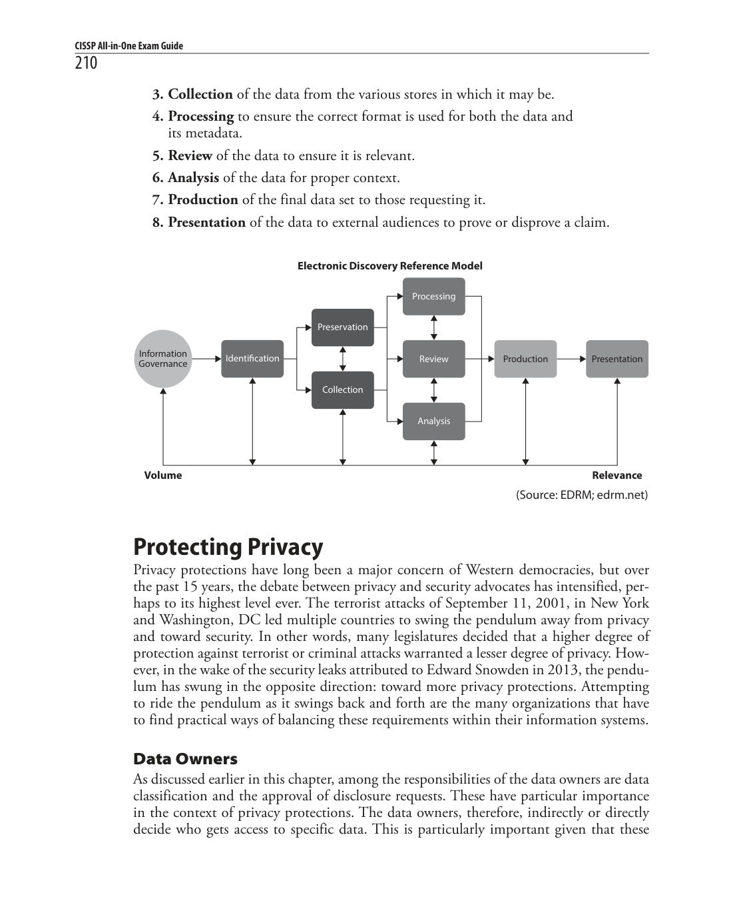
(Source: EDRM; edrm.net)
Protecting Privacy
Privacy protections have long been a major concern of Western democracies, but over the past 15 years, the debate between privacy and security advocates has intensified, perhaps to its highest level ever. The terrorist attacks of September 11, 2001, in New York and Washington, DC led multiple countries to swing the pendulum away from privacy and toward security. In other words, many legislatures decided that a higher degree of protection against terrorist or criminal attacks warranted a lesser degree of privacy. However, in the wake of the security leaks attributed to Edward Snowden in 2013, the pendulum has swung in the opposite direction: toward more privacy protections. Attempting to ride the pendulum as it swings back and forth are the many organizations that have to find practical ways of balancing these requirements within their information systems.
Data Owners
As discussed earlier in this chapter, among the responsibilities of the data owners are data classification and the approval of disclosure requests. These have particular importance in the context of privacy protections. The data owners, therefore, indirectly or directly decide who gets access to specific data. This is particularly important given that these
individuals typically are senior managers within the organization. In reality, the majority of these decisions should be codified in formal written policies. Any exceptions to policy should be just that—exceptions—and must be properly documented.
Data Processers
The group of users best positioned to protect (or compromise) data privacy consists of those who deal with that data on a routine basis:data processers. These individuals can be found in a variety of places within the organization depending on what particular data is of concern. The critical issue here with respect to privacy is that these individuals understand the boundaries of what is acceptable behavior and (just as importantly) know what to do when data is accidentally or intentionally handled in a manner that does not conform to applicable policies. The key issues in terms of privacy protections for this group are training and auditing. On the one hand, data processers must be properly trained to handle their duties and responsibilities. On the other hand, there must be routine inspections to ensure their behavior complies with all applicable laws, regulations, and policies.
Data Remanence
Even when policies exist (and are enforced and audited) to ensure the protection of privacy, it is possible for technical issues to threaten this privacy. It is a well-known fact that most data deletion operations do not, in fact, erase anything; normally, they simply mark the memory as available for other data without wiping (or even erasing) the original data. This is true not only of file systems, but also of databases. Since it is difficult to imagine a data store that would not fit in either of these two constructs, it should be clear that simply “deleting” data will likely result in data remanence issues.
NIST Special Publication 800-88, Revision 1, “Guidelines for Media Sanitization” (December 2014), describes the best practices for combating data remanence.
Let’s consider what happens when we create a text file using the File Allocation Table (FAT) file system. Though this original form of FAT is antiquated, its core constructs (e.g., disk blocks, free block list/table, file metadata table) are also found at the heart of all other modern file systems. Its simplicity makes it a wonderful training tool for the purpose of explaining file creation and deletion. Suppose we type up the famous Aesop fable titled “The Lion and the Mouse” in a text editor and save it to disk. The operating system will ask us for a filename, which will be Story2.txt for this example. The system will then check the File Allocation Table for available blocks on which to store the text file. As shown in Figure 2-2, the system creates a directory entry for the file containing the name (Story2.txt), location of the first block (163), and the file size in bytes (714). In our simplistic example, each block is 512 bytes in size, so we’ll need two of them. Fortunately, block 164 is right next to the start block and is also free. The system will use the entry for block 163 (the first block of the file)
Root Directory
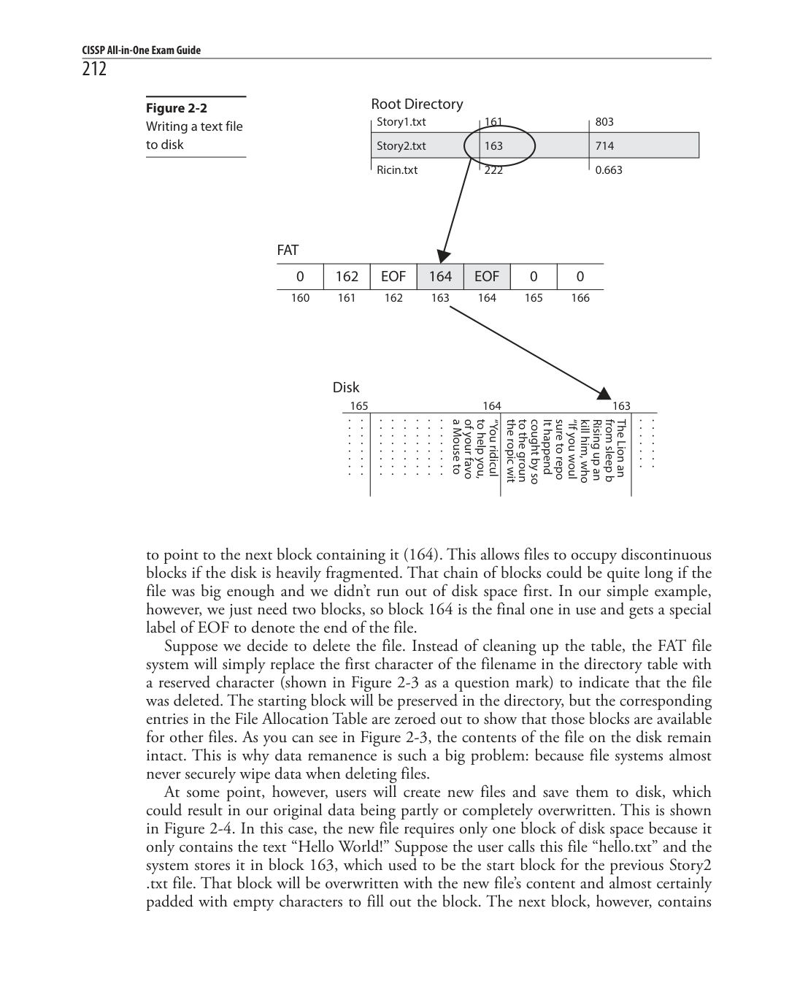
Figure 2-2
FAT 0162EOF164EOF00
Disk
to point to the next block containing it (164). This allows files to occupy discontinuous blocks if the disk is heavily fragmented. That chain of blocks could be quite long if the file was big enough and we didn’t run out of disk space first. In our simple example, however, we just need two blocks, so block 164 is the final one in use and gets a special label of EOF to denote the end of the file. Suppose we decide to delete the file. Instead of cleaning up the table, the FAT file system will simply replace the first character of the filename in the directory table with a reserved character (shown in Figure 2-3 as a question mark) to indicate that the file was deleted. The starting block will be preserved in the directory, but the corresponding entries in the File Allocation Table are zeroed out to show that those blocks are available for other files. As you can see in Figure 2-3, the contents of the file on the disk remain intact. This is why data remanence is such a big problem: because file systems almost never securely wipe data when deleting files. At some point, however, users will create new files and save them to disk, which could result in our original data being partly or completely overwritten. This is shown in Figure 2-4. In this case, the new file requires only one block of disk space because it only contains the text “Hello World!” Suppose the user calls this file “hello.txt” and the system stores it in block 163, which used to be the start block for the previous Story2 .txt file. That block will be overwritten with the new file’s content and almost certainly padded with empty characters to fill out the block. The next block, however, contains
Root Directory
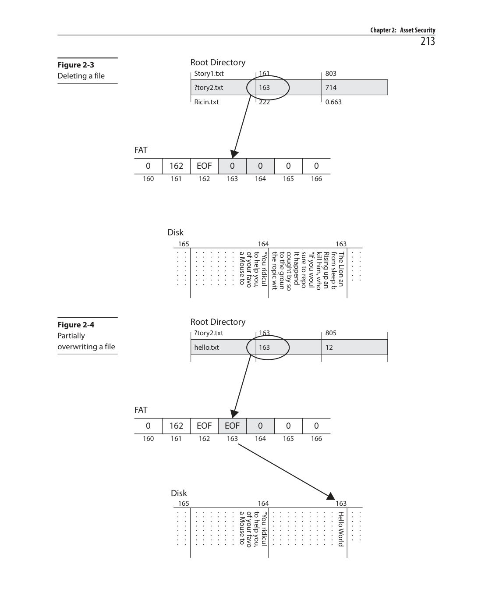
Figure 2-3
FAT 0162EOF0000
Disk
Root Directory
FAT 0162EOFEOF000
Disk
the remainder of the deleted file, so partial contents are still available to anyone with the right recovery tools. Note also that the original file’s metadata is preserved in the directory table until that block is needed for another file. This example, though simplistic, illustrates the process used by almost every file system when creating and deleting files. The data structures may be named differently in modern versions of Windows, Linux, and Mac OS X, but their purpose and behavior remain essentially the same. In fact, many databases use a similar approach to “deleting” entries by simply marking them as deleted without wiping the original data. To counter data remanence, it is important to identify procedures for ensuring that private data is properly removed. Generally speaking, there are four approaches to eliminating data remanence:
OverwritingOverwriting data entails replacing the 1’s and 0’s that represent
- it on storage media with random or fixed patterns of 1’s and 0’s in order to render the original data unrecoverable. This should be done at least once (e.g., overwriting the medium with 1’s, 0’s, or a pattern of these), but may have to be done more than that. For many years the U.S. Department of Defense (DoD) standard 5220.22-M required that media be overwritten seven times. This standard has since been superseded. DoD systems with sensitive information must now be degaussed.
DegaussingThis is the process of removing or reducing the magnetic field
- patterns on conventional disk drives or tapes. In essence, a powerful magnetic force is applied to the media, which results in the wiping of the data and sometimes the destruction of the motors that drive the platters. While it may still be possible to recover the data, it is typically cost prohibitive to do so.
EncryptionMany mobile devices take this approach to quickly and securely
- render data unusable. The premise is that the data is stored on the medium in encrypted format using a strong key. To render the data unrecoverable, the system simply needs to securely delete the encryption key, which is many times faster than deleting the encrypted data. Recovering the data in this scenario is typically computationally infeasible.
Physical destructionPerhaps the best way to combat data remanence is to
- simply destroy the physical media. The two most commonly used approaches to destroying media are to shred it or expose it to caustic or corrosive chemicals that render it unusable. Another approach is incineration.
Limits on Collection
Securely deleting data is necessary, but not enough. We must also ensure that the data we collect in the first place, particularly when it is personal in nature, is necessary for our jobs. Generally speaking, organizations should collect the least amount of private personal data required for the performance of their business functions. In many cases, this is not a matter of choice but of law. As of 2014, over 100 countries have enacted privacy protection laws that affect organizations within their jurisdictions. It is important to
note that privacy protections vary widely among countries. Argentina is one of the most restrictive countries with respect to privacy, while China effectively has no restrictions. The United States has very few restrictions on the collection of private data by nongovernmental organizations, and the European Union has yet to coalesce on a common set of standards in this regard. The point is that you have to be aware of the specific privacy laws that pertain to the places in which your organization stores or uses its data. This is particularly important when you outsource services (which may require access to your data) to third parties in a different country. Apart from applicable laws and regulations, the types of personal data that your organization collects, as well as its life-cycle considerations, must be a matter of explicit written policy. Your privacy policy needs to cover your organization’s collection, use, disclosure, and protection of employee and client data. Many organizations break their privacy policy into two documents: one internal document that covers employee data, and a second external document that covers customer information. At a minimum, you want to answer the following questions when writing your policy:
What personal data is collected (e.g., name, website visits, e-mail messages, etc.)?
- Why do we collect this data and how do we use it (e.g., to provide a service,
- forsecurity)?
With whom do we share this data (e.g., third-party providers, law enforcement
- agencies)?
Who owns the collected data (e.g., subject, organization)?
- What rights does the subject of this data have with regard to it (e.g., opt out,
- restrictions)?
When do we destroy the data (e.g., after five years, never)?
- What specific laws or regulations exist that pertain to this data?
Protecting Assets
The main threats that physical security components combat are theft, interruptions to services, physical damage, compromised system and environment integrity, and unauthorized access. Real loss is determined by the cost to replace the stolen items, the negative effect on productivity, the negative effect on reputation and customer confidence, fees for consultants that may need to be brought in, and the cost to restore lost data and production levels. Many times, companies just perform an inventory of their hardware and provide value estimates that are plugged into risk analysis to determine what the cost to the company would be if the equipment were stolen or destroyed. However, the information held within the equipment may be much more valuable than the equipment itself, and proper recovery mechanisms and procedures also need to be plugged into the risk assessment for a more realistic and fair assessment of cost. Let’s take a look at some of the controls we can use in order to mitigate risks to our data and to the media on which it resides.
Data Security Controls
Which controls we choose to use to mitigate risks to our information depend not only on the value we assign to that information, but also on the dynamic state of that information. Generally speaking, data exists in one of three states: at rest, in motion, or in use. These states and their interrelations are shown in Figure 2-5. The risks to each state are different in significant ways, as described next.
Data at Rest
Information in an information system spends most of its time waiting to be used. The termdata at restrefers to data that resides in external or auxiliary storage devices, such as hard disk drives (HDDs), solid-state drives (SSDs), optical discs (CD/DVD), or even on magnetic tape. A challenge with protecting data in this state is that it is vulnerable, not only to threat actors attempting to reach it over our systems and networks, but also to anyone who can gain physical access to the device. It is not uncommon to hear of data breaches caused by laptops or mobile devices being stolen. In fact, one of the largest personal health information (PHI) breaches occurred in San Antonio, Texas, in September 2009 when an employee left unattended in his car backup tapes containing PHI on some 4.9 million patients. A thief broke into the vehicle and made off with the data. The solution to protecting data in such scenarios is as simple as it is ubiquitous: encryption. Every major operating system now provides means to encrypt individual files or entire volumes in a way that is almost completely transparent to the user. Third-party software is also available to encrypt compressed files or perform whole-disk encryption. What’s more, the current state of processor power means that there is no noticeable decrease in the performance of computers that use encryption to protect their data. Unfortunately, encryption is not yet the default configuration in any major operation system. The process of enabling it, however, is so simple that it borders on the trivial. Many medium and large organizations now have policies that require certain information to be encrypted whenever it is stored in an information system. While typically this applies to PII, PHI, or other regulated information, some organizations are taking the proactive step of requiring whole-disk encryption to be used on all portable computing devices such as laptops and external hard drives. Beyond what are clearly easily pilfered devices, we should also consider computers we don’t normally think of as mobile. Another major breach of PHI was reported by Sutter Health of California in 2011 when a thief broke a window and stole a desktop computer containing the
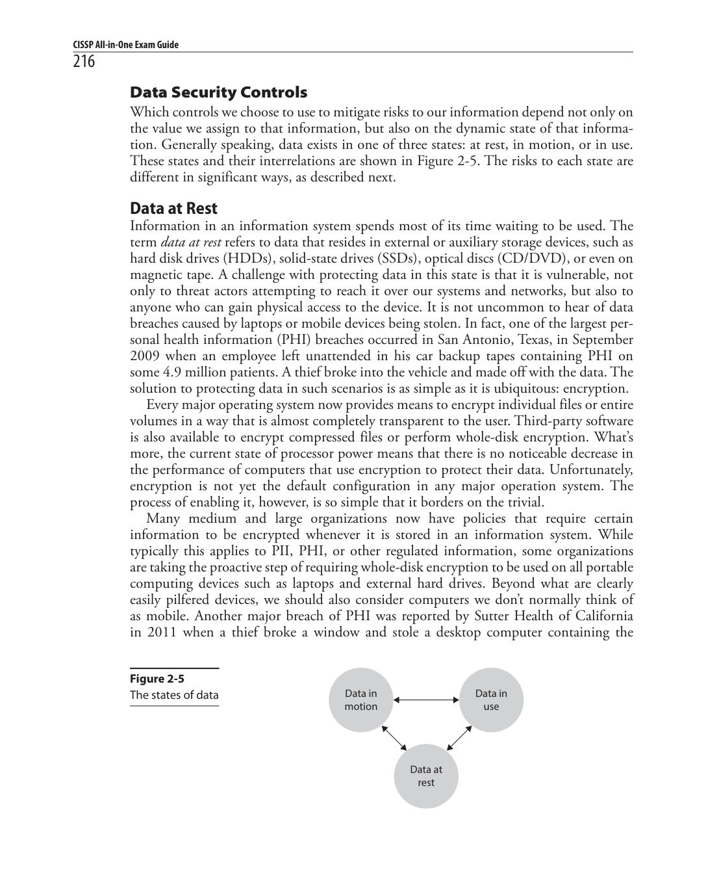
Figure 2-5
unencrypted records on more than 4 million patients. We should really try to encrypt all data being stored anywhere, and modern technology makes this easier than ever. This approach to “encrypt everywhere” reduces the risk of users accidentally storing sensitive information in unencrypted volumes.
NIST Special Publication 800-111, “Guide to Storage Encryption Technologies for End User Devices,” provides a good, if somewhat dated (2007), approach to this topic.
Where in the World Is Your Data?
Certain countries require that data within its geographic borders, regardless of country of ownership, be made available to certain government organizations such as law enforcement and intelligence agencies with proper authorization. If the data is encrypted, then the organization hosting the data in that country is responsible for providing the keys or could face criminal charges. For this reason, many organizations require their data to be stored only within specific geographical boundaries. This can pose serious challenges to multinational organizations and to some users of cloud computing services. Additionally, even if properly stored in the right places, the data could find its way to other countries when certain services, such as customer support, are outsourced. When planning your data storage architectures, it is imperative that you understand exactly where in the world your data could end up going.
Data in Motion
Data in motionis data that is moving between computing nodes over a data network such as the Internet. This is perhaps the riskiest time for our data: when it leaves the confines of our protected enclaves and ventures into that Wild West that is the Internet. Fortunately, encryption once again rises to the challenge. The single best protection for our data while it is in motion (whether within or without our protected networks) is strong encryption such as that offered by Transport Layer Security (TLS version 1.1 and later) or IPSec. We will discuss strong (and weak) encryption in Chapter 3, but for now you should be aware that TLS and IPSec support multiple cipher suites and that some of these are not as strong as others. Weaknesses typically are the result of attempts at ensuring backward compatibility, but result in unnecessary (or perhaps unknown) risks. By and large, TLS relies on digital certificates (more on those in the next chapter) to certify the identity of one or both endpoints. Typically, the server uses a certificate but the client doesn’t. This one-way authentication can be problematic because it relies on the user to detect a potential impostor. A common exploit for this vulnerability is known as a man-in-the-middle (MitM) attack. The attacker intercepts the request from
the client to the server and impersonates the server, pretending to be, say, Facebook. The attacker presents to the client a fake web page that looks exactly like Facebook and requests the user’s credentials. Once the user provides that information, the attacker can forward the log-in request to Facebook and then continue to relay information back and forth between the client and the server over secure connections, intercepting all traffic in the process. A savvy client would detect this by noticing that the web browser reports a problem with the server’s certificate. (It is extremely difficult for all but certain nation-states to spoof a legitimate certificate.) Most users, however, simply click through any such warnings without thinking of the consequences. This tendency to ignore the warnings underscores the importance of security awareness in our overall efforts to protect our information and systems. Another approach to protecting our data in motion is to use trusted channels between critical nodes. Virtual private networks (VPNs) are frequently used to provide secure connections between remote users and corporate resources. VPNs are also used to securely connect campuses or other nodes that are physically distant from each other. The trusted channels we thus create allow secure communications over shared or untrusted network infrastructure.
Data in Use
Data in useis the term for data residing in primary storage devices, such as volatile memory (e.g., RAM), memory caches, or CPU registers. Typically, data remains in primary storage for short periods of time while a process is using it. Note, however, that anything stored in volatile memory could persist there for extended periods (until power is shut down) in some cases. The point is that data in use is being touched by the CPU or ALU in the computer system and will eventually go back to being data at rest, or end up being deleted. As discussed earlier, data at rest should be encrypted. The challenge is that, in most operating systems today, the data must be decrypted before it is used. In other words, data in use generally cannot be protected by encrypting it. Many people think this is safe, the thought process being, “If I’m encrypting my data at rest and in transit already, why would I worry about protecting it during the brief period in which it is being used by the CPU? After all, if someone can get to my volatile memory, I probably have bigger problems than protecting this little bit of data, right?” Not really. Various independent researchers have demonstrated effective side-channel attacks against memory shared by multiple processes. Aside-channel attackexploits information that is being leaked by a cryptosystem. As we will see in our later discussion of cryptology, a cryptosystem can be thought of as connecting two channels: a plaintext channel and an encrypted one. Aside channelis any information flow that is the electronic byproduct of this process. As an illustration of this, imagine yourself being transported in the windowless back of a van. You have no way of knowing where you are going, but you can infer some aspects of the route by feeling the centrifugal force when the van makes a turn or follows a curve. You could also pay attention to the engine noise or the pressure in your ears as you climb or descend hills. These are all side channels. Similarly, if you are trying to recover the secret keys used to encrypt data, you could pay attention to how
much power is being consumed by the CPU or how long it takes for other processes to read and write from memory. Researchers have been able to recover 2,048-bit keys from shared systems in this manner. But the threats are not limited to cryptosystems alone. The infamous Heartbleed security bug of 2014 demonstrated how failing to check the boundaries of requests to read from memory could expose information from one process to others running on the same system. In that bug, the main issue was that anyone communicating with the server could request an arbitrarily long “heartbeat” message from it. Heartbeat messages are typically short strings that let the other end know that an endpoint is still there and wanting to communicate. The developers of the library being used for this never imagined that someone would ask for a string that was hundreds of characters in length. The attackers, however, did think of this and in fact were able to access crypto keys and other sensitive data belonging to other users. So, how do we protect our data in use? For now, it boils down to ensuring our software is tested against these types of attacks. Obviously, this is a tricky proposition, since it is very difficult to identify and test for every possible software flaw. Still, secure development practices, as we will see in Chapter 8, have to be a critical component of our security efforts. In the near future, whole-memory encryption will mitigate the risks described in this section, particularly when coupled with the storage of keys in CPU registers instead of in RAM. Until these changes are widely available, however, we must remain vigilant to the threats against our data while it is in use.
Media Controls
As we have seen, data can exist in many types of media. Even data in motion and data in use can be temporarily stored or cached on devices throughout our systems. These media and devices require a variety of controls to ensure data is properly preserved and that its integrity, confidentiality, and availability are not compromised. For the purposes of this discussion, “media” may include both electronic (disk, CD/DVD, tape, Flash devices such as USB “thumb drives,” and so on) and nonelectronic (paper) forms of information; and media libraries may come into custody of media before, during, and/or after the information content of the media is entered into, processed on, and/or removed from systems. The operational controls that pertain to these issues come in many flavors. The first are controls that prevent unauthorized access (protect confidentiality), which, as usual, can be physical, administrative, and technical. If the company’s backup tapes are to be properly protected from unauthorized access, they must be stored in a place where only authorized people have access to them, which could be in a locked server room or an offsite facility. If media needs to be protected from environmental issues such as humidity, heat, cold, fire, and natural disasters (to maintain availability), the media should be kept in a fireproof safe in a regulated environment or in an offsite facility that controls the environment so it is hospitable to data processing components. Companies may have a media library with a librarian in charge of protecting its resources. If so, most or all of the responsibilities described in this chapter for the protection of the confidentiality, integrity, and availability of media fall to the librarian. Users may
be required to check out specific types of media and resources from the library, instead of having the resources readily available for anyone to access them. This is common when the media library includes the distribution media for licensed software. It provides an accounting (audit log) of uses of media, which can help in demonstrating due diligence in complying with license agreements and in protecting confidential information (such as PII, financial/credit card information, and PHI) in media libraries containing those types of data. Media should be clearly marked and logged, its integrity should be verified, and it should be properly erased of data when no longer needed. After large investment is made to secure a network and its components, a common mistake is for old computers along with their hard drives and other magnetic storage media to be replaced, and the obsolete equipment shipped out the back door along with all the data the company just spent so much time and money securing. This puts the information on the obsolete equipment and media at risk of disclosure and violates legal, regulatory, and ethical obligations of the company. Thus, overwriting (see Figure 2-6) and secure overwriting algorithms are required. And if any part of a piece of media containing highly sensitive information cannot be cleared or purged, then physical destruction must take place.
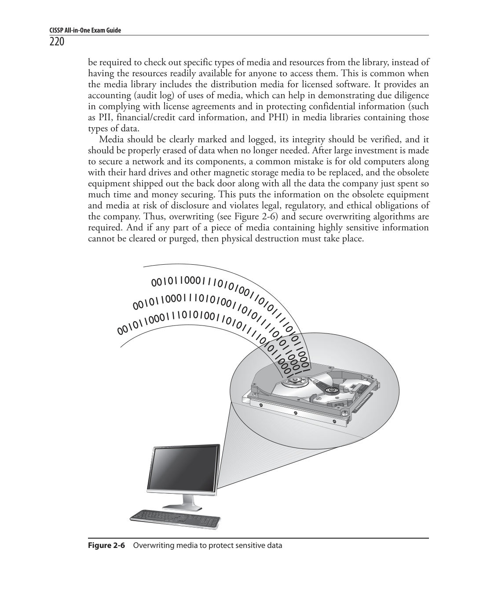
Figure 2-6Overwriting media to protect sensitive data
When media is erased (clearedof its contents), it is said to besanitized. In military/ government classified systems terms, this means erasing information so it is not readily retrieved using routine operating system commands or commercially available forensic/data recovery software. Clearing is acceptable when media will be reused in the same physical environment for the same purposes (in the same compartment of compartmentalized information security) by people with the same access levels for that compartment. Not all clearing/purging methods are applicable to all media—for example, optical media is not susceptible to degaussing, and overwriting may not be effective when dealing with solid-state devices. The degree to which information may be recoverable by a sufficiently motivated and capable adversary must not be underestimated or guessed at in ignorance. For the highest-value commercial data, and for all data regulated by government or military classification rules, read and follow the rules and standards. The guiding principle for deciding what is the necessary method (and cost) of data erasure is to ensure that the enemies’ cost of recovering the data exceeds the value of the data. “Sink the company” (or “sink the country”) information has value so high that the destruction of the media, which involves both the cost of the destruction and the total loss of any potential reusable value of the media, is justified. For most other categories of information, multiple or simple overwriting is sufficient. Each company must evaluate the value of its data and then choose the appropriate erasure/disposal method. Methods were discussed earlier for secure clearing, purging, and destruction of electronic media. Other forms of information, such as paper, microfilm, and microfiche, also require secure disposal. “Dumpster diving” is the practice of searching through trash at homes and businesses to find valuable information that was simply thrown away without being first securely destroyed through shredding or burning.
Atoms and Data
A device that performs degaussing generates a coercive magnetic force that reduces the magnetic flux density of the storage media to zero. This magnetic force is what properly erases data from media. Data is stored on magnetic media by the representation of the polarization of the atoms. Degaussing changes this polarization (magnetic alignment) by using a type of large magnet to bring it back to its original flux (magnetic alignment).
Media management, whether in a library or managed by other systems or individuals, has the following attributes and tasks:
Tracking(audit logging) who has custody of each piece of media at any given
- moment. This creates the same kind of audit trail as any audit logging activity— to allow an investigation to determine where information was at any given time, who had it, and, for particularly sensitive information, why they accessed it. This enables an investigator to focus efforts on particular people, places, and times if a breach is suspected or known to have happened.
Effectively implementing access controlsto restrict who can access each piece
- of media to only those people defined by the owner of the media/information on the media, and to enforce the appropriate security measures based on the classification of the media/information on the media. Certain media, due to its physical type and/or the nature of the information on it, may require special handling. All personnel who are authorized to access media must have training to ensure they understand what is required of such media. An exampleof special handling for, say, classified information may be that the media may onlybe removed from the library or its usual storage place under physical guard, and even then may not be removed from the building. Access controls will includephysical(locked doors, drawers, cabinets, or safes),technical(access and authorization control of any automated system for retrieving contents of information in the library), andadministrative(the actual rules for who is supposed to do what to each piece of information). Finally, the data may need to change format, as in printing electronic data to paper. The data still needs to be protected at the necessary level, no matter what format it is in. Procedures must include how to continue to provide the appropriate protection. For example, sensitive material that is to be mailed should be sent in a sealable inner envelope and use only courier service.
Tracking the number and location of backup versions(both onsite and
- offsite). This is necessary to ensure proper disposal of information when the information reaches the end of its lifespan, to account for the location and accessibility of information during audits, and to find a backup copy of information if the primary source of the information is lost or damaged.
Documenting the history of changes to media.For example, when a particular
- version of a software application kept in the library has been deemed obsolete, this fact must be recorded so the obsolete version of the application is not used unless that particular obsolete version is required. Even once no possible need for the actual media or its content remains, retaining a log of the former existence and the time and method of its deletion may be useful to demonstrate due diligence.
Ensuring environmental conditions do not endanger media.Each media
- type may be susceptible to damage from one or more environmental influences. For example, all media formats are susceptible to fire, and most are susceptible to liquids, smoke, and dust. Magnetic media formats are susceptible to strong magnetic fields. Magnetic and optical media formats are susceptible to variations in temperature and humidity. A media library and any other space where reference copies of information are stored must be physically built so all types of media will be kept within their environmental parameters, and the environment must be monitored to ensure conditions do not range outside of those parameters. Media libraries are particularly useful when large amounts of information must be stored and physically/environmentally protected so that the high cost of environmental control and media management may be centralized in a small number of physical locations and so that cost is spread out over the large number of items stored in the library.
Ensuring media integrityby verifying on a media-type and environment-
- appropriate basis that each piece of media remains usable and transferring stillvaluable information from pieces of media reaching their obsolescence date to new pieces of media. Every type of media has an expected lifespan under certain conditions, after which it can no longer be expected that the media will reliably retain information. For example, a commercially produced CD or DVD stored in good environmental conditions should be reliable for at least ten years, whereas an inexpensive CD-R or DVD-R sitting on a shelf in a home office may become unreliable after just one year. All types of media in use at a company should have a documented (and conservative) expected lifespan. When the information on a piece of media has more remaining lifespan before its scheduled obsolescence/ destruction date than does the piece of media on which the information is recorded, then the information must be transcribed to a newer piece or a newer format of media. Even the availability of hardware to read media in particular formats must be taken into account. A media format that is physically stable for decades, but for which no working device remains available to read, is of no value. Additionally, as part of maintaining the integrity of the specific contents of a piece of media, if the information on that media is highly valuable or mandated to be kept by some regulation or law, a cryptographic signature of the contents of the media may be maintained, and the contents of the piece of media verified against that signature on a regular basis.
Inventorying the media on a scheduled basisto detect if any media has been
- lost/changed. This can reduce the amount of damage a violation of the other media protection responsibilities could cause by detecting such violations sooner rather than later, and is a necessary part of the media management life cycle by which the controls in place are verified as being sufficient.
Carrying out secure disposal activities.Disposition includes the lifetime after
- which the information is no longer valuable and the minimum necessary measures for the disposal of the media/information. Secure disposal of media/information can add significant cost to media management. Knowing that only a certain percentage of the information must be securely erased at the end of its life may significantly reduce the long-term operating costs of the company. Similarly, knowing that certain information must be disposed of securely can reduce the possibility of a piece of media being simply thrown in a dumpster and then found by someone who publicly embarrasses or blackmails the company over the data security breach represented by that inappropriate disposal of the information. It is the business that creates the information stored on media, not the person, library, or librarian who has custody of the media, that is responsible for setting the lifetime and disposition of that information. The business must take into account the useful lifetime of the information to the business, legal, and regulatory restrictions, and, conversely, the requirements for retention and archiving when making these decisions. If a law or regulation requires the information to be kept beyond its normally useful lifetime for the business, then disposition may involve archiving—moving the information from the ready (and possibly more expensive) accessibility of a library to a long-term stable and (with some effort) retrievable format that has lower storage costs.
Internal and external labelingof each piece of media in the library should include
- Date created
- Retention period
- Classification level
- Who created it
- Date to be destroyed
- Name and version
- Taken together, these tasks implement the full life cycle of the media and represent a necessary part of the full life cycle of the information stored thereon.
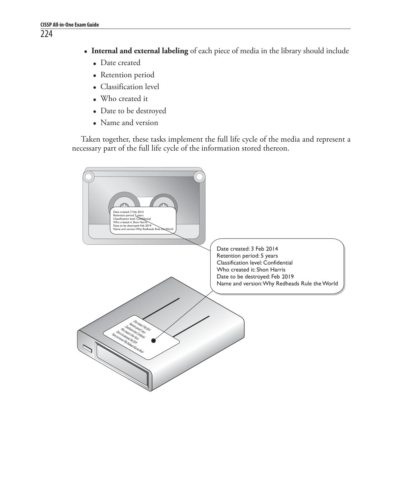
Diagram (p. 258)
Data Leakage
Unless we diligently apply the right controls to our data wherever it may be, we should expect that some of it will eventually end up in the wrong hands. In fact, even if we do everything right, the risk of this happening will never be eliminated. Leaks of personal information by an organization can cause large financial losses. The costs commonly include
Investigating the incident and remediating the problem
- Contacting affected individuals to inform them about the incident
- Penalties and fines to regulatory agencies
- Contractual liabilities
- Mitigating expenses (such as free credit monitoring services for affected individuals)
- Direct damages to affected individuals
- In addition to financial losses, a company’s reputation may be damaged and individuals’ identities may be stolen. The most common cause of data breach for a business is a lack of awareness and discipline among employees—an overwhelming majority of all leaks are the result of negligence. The most common forms of negligent data breaches occur due to the inappropriate removal of information—for instance, from a secure company system to an insecure home computer so that the employee can work from home—or due to simple theft of an insecure laptop or tape from a taxi cab, airport security checkpoint, or shipping box. However, breaches also occur due to negligent uses of technologies that are inappropriate for a particular use—for example, reassigning some type of medium (say, a page frame, disk sector, or magnetic tape) that contained one or more objects to an unrelated purpose without securely ensuring that the media contained no residual data. It would be too easy to simply blame employees for any inappropriate use of information that results in the information being put at risk, followed by breaches. Employees have a job to do, and their understanding of that job is almost entirely based on what their employer tells them. What an employer tells an employee about the job is not limited to, and may not even primarily be in, the “job description.” Instead, it will be in the feedback the employee receives on a day-to-day and year-to-year basis regarding their work. If the company in its routine communications to employees and its recurring training, performance reviews, and salary/bonus processes does not include security awareness, then employees will not understand security to be a part of their job. The more complex the environment and types of media used, the more communication and training that are required to ensure that the environment is well protected. Further, except in government and military environments, company policies and even awareness training will not stop the most dedicated employees from making the best use of up-todate consumer technologies, including those technologies not yet integrated into the corporate environment, and even those technologies not yet reasonably secured for the corporate environment or corporate information. Companies must stay aware of new consumer technologies and how employees (wish to) use them in the corporate environment. Just saying “no” will not stop an employee from using, say, a personal
smartphone, a USB thumb drive, or webmail to forward corporate data to their home e-mail address in order to work on the data when out of the office. Companies must include in their technical security controls the ability to detect and/or prevent such actions through, for example, computer lockdowns, which prevent writing sensitive data to noncompany-owned storage devices, such as USB thumb drives, and e-mailing sensitive information to non approved e-mail destinations.
Data Leak Prevention
Data leak prevention (DLP)comprises the actions that organizations take to prevent unauthorized external parties from gaining access to sensitive data. That definition has some key terms. First, the data has to be consideredsensitive, the meaning of which we spent a good chunk of the beginning of this chapter discussing. We can’t keep every single datum safely locked away inside our systems, so we focus our attention, efforts, and funds on the truly important data. Second, DLP is concerned withexternal parties. If somebody in the accounting department gains access to internal R&D data, that is a problem, but technically it is not considered a data leak. Finally, the external party gaining access to our sensitive data must beunauthorizedto do so. If former business partners have some of our sensitive data that they were authorized to get at the time they were employed, then that is not considered a leak either. While this emphasis on semantics may seem excessive, it is necessary to properly approach this tremendous threat to our organizations.
The terms data loss and data leak are used interchangeably by most security professionals. Technically, however,data lossmeans we do not know where the data is (e.g., after the theft of a laptop), whiledata leak means that the confidentiality of the data has been compromised (e.g., when the laptop thief posts the files on the Internet). The real challenge to DLP is in taking a holistic view of our organization. This perspective must incorporate our people, our processes, and then our information. A common mistake when it comes to DLP is to treat the problem as a technological one. If all we do is buy or develop the latest technology aimed at stopping leaks, we are very likely to leak data. If, on the other hand, we consider DLP a program and not a project, and we pay due attention to our business processes, policies, culture, and people, then we have a good fighting chance at mitigating many or even most of the potential leaks. Ultimately, like everything else concerning information system security, we have to acknowledge that despite our best efforts, we will have bad days. The best we can do is stick to the program and make our bad days less frequent and less bad.
General Approaches to DLP
There is no one-size-fits-all approach to DLP, but there are tried-and-true principles that can be helpful. One important principle is the integration of DLP with our risk management processes. This allows us to balance out the totality of risks we face and favor controls that mitigate those risks in multiple areas simultaneously. Not only is this helpful in making the most of our resources, but it also keeps us from making decisions
in one silo with little or no regard to their impacts on other silos. In the sections that follow, we will look at key elements of any approach to DLP.
Data InventoriesIt is difficult to defend an unknown target. Similarly, it is difficult to prevent the leaking of data of which we are unaware or whose sensitivity is unknown. Some organizations try to protect all their data from leakage, but this is not a good approach. For starters, acquiring the resources required to protect everything is likely cost prohibitive to most organizations. Even if an organization is able to afford this level of protection, it runs a very high risk of violating the privacy of its employees and/ or customers by examining every single piece of data in its systems. A good approach is to find and characterize all the data in your organization before you even look at DLP solutions. The task can seem overwhelming at first, but it helps to prioritize things a bit. You can start off by determining what is the most important kind of data for your organization. A compromise of these assets could lead to direct financial losses or give your competitors an advantage in your sector. Are these health care records? Financial records? Product designs? Military plans? Once you figure this out, you can start looking for that data across your servers, workstations, mobile devices, cloud computing platforms, and anywhere else it may live. Keep in mind that this data can live in a variety of formats (e.g., DBMS records or files) and media (e.g., hard drives or backup tapes). If your experience doing this for the first time is typical, you will probably be amazed at the places in which you find sensitive data. Once you get a handle on what is your high-value data and where it resides, you can gradually expand the scope of your search to include less valuable, but still sensitive, data. For instance, if your critical data involves designs for next-generation radios, you would want to look for information that could allow someone to get insights into those designs even if they can’t directly get them. So, for example, if you have patent filings, FCC license applications, and contracts with suppliers of electronic components, then an adversary may be able to use all this data to figure out what you’re designing even without direct access to your new radio’s plans. This is why it is so difficult for Apple to keep secret all the features of a new iPhone ahead of its launch. Often there is very little you can do to mitigate this risk, but some organizations have gone as far as to file patents and applications they don’t intend to use in an effort to deceive adversaries as to their true plans. Obviously, and just as in any other security decision, the costs of these countermeasures must be weighted against the value of the information you’re trying to protect. As you keep expanding the scope of your search, you will reach a point of diminishing returns in which the data you are inventorying is not worth the time you spend looking for it.
We cover the threats posed by adversaries compiling public information (aggregation) and using it to derive otherwise private information (inference) in Chapter 8.
Once you are satisfied that you have inventoried your sensitive data, the next step is to characterize it. We already covered the classification of information earlier in this chapter, so
you should know all about data labels. Another element of this characterization is ownership. Who owns a particular set of data? Beyond that, who should be authorized to read or modify it? Depending on your organization, your data may have other characteristics of importance to the DLP effort, such as which data is regulated and how long it must be retained.
Data FlowsData that stays put is usually of little use to anyone. Most data will move according to specific business processes through specific network pathways. Understanding data flows at this intersection between business and IT is critical to implementing DLP. Many organizations put their DLP sensors at the perimeter of their networks, thinking that is where the leakages would occur. But if that’s the only location these sensors are placed, a large number of leaks may not be detected or stopped. Additionally, as we will discuss in detail when we cover network-based DLP, perimeter sensors can often be bypassed by sophisticated attackers. A better approach is to use a variety of sensors tuned to specific data flows. Suppose you have a software development team that routinely passes finished code to a quality assurance (QA) team for testing. The code is sensitive, but the QA team is authorized to read (and perhaps modify) it. However, the QA team is not authorized to access code under development or code from projects past. If an adversary compromises the computer used by a member of the QA team and attempts to access the source code for different projects, a DLP solution that is not tuned to that business process will not detect the compromise. The adversary could then repackage the data to avoid your perimeter monitors and successfully extract the data.
Data Protection StrategyThe example just described highlights the need for a comprehensive, risk-based data protection strategy. A simple way for an adversary (internal or remote) to extract data from our systems is to encrypt it and/or use steganography to hide it within an innocuous file.Steganography, which we discuss in detail in Chapter 3, is the process of hiding data within other data such that it is difficult or impossible to detect the hidden content. The extent to which we attempt to mitigate these exfiltration routes depends on our assessment of the risk of their use. Obviously, as we increase our scrutiny of a growing set of data items, our costs will grow disproportionately. We usually can’t watch everything all the time, so what do we do? Once we have our data inventories and understand our data flows, we have enough information to do a risk assessment. Recall that we described this process in detail in Chapter 1. The trick is to incorporate data loss into that process. Since we can’t guarantee that we will successfully defend against all attacks, we have to assume that sometimes our adversaries will gain access to our networks. Not only does our data protection strategy have to cover our approach to keeping attackers out, but it also must describe how we protect our data against a threat agent that is already inside. The following are some key areas to consider when developing data protection strategies:
Backup and recoveryThough we have been focusing our attention on data
- leaks, it is also important to consider the steps to prevent the loss of this data due to electromechanical or human failures. As we take care of this, we need to also consider the risk that, while we focus our attention on preventing leaks of our primary data stores, our adversaries may be focusing their attention on stealing the backups.
Data life cycleMost of us can intuitively grasp the security issues at each of the
- stages of the data life cycle. However, we tend to disregard securing the data as it transitions from one stage to another. For instance, if we are archiving data at an offsite location, are we ensuring that it is protected as it travels there?
Physical securityWhile IT provides a wealth of tools and resources to help
- us protect our data, we must also consider what happens when an adversary just steals a hard drive left in an unsecured area, as happened to Sentara Heart Hospital in Norfolk, Virginia, in August 2015.
Security cultureOur information systems users can be a tremendous control
- if properly educated and incentivized. By developing a culture of security within our organizations, we not only reduce the incidence of users clicking on malicious links and opening attachments, but we also turn each of them into a security sensor, able to detect attacks that we may not otherwise be able to.
PrivacyEvery data protection policy should carefully balance the need to
- monitor data with the need to protect our users’ privacy. If we allow our users to check personal e-mail or visit social media sites during their breaks, would our systems be quietly monitoring their private communications?
Organizational changeMany large organizations grow because of mergers
- and acquisitions. When these changes happen, we must ensure that the data protection approaches of all entities involved are consistent and sufficient. To do otherwise is to ensure that the overall security posture of the new organization is the lesser of its constituents’ security postures.
Implementation, Testing, and TuningAll the elements of a DLP process that we have discussed so far (i.e., data inventories, data flows, and data protection strategies) are administrative in nature. We finally get to discuss the part of DLP with which most of us are familiar: deploying and running a toolset. The sequence of our discussion so far has been deliberate in that the technological part needs to be informed by the other elements we’ve covered. Many organizations have wasted large sums of money on so-called solutions that, though well known and regarded, are just not suitable for their particular environment. Assuming we’ve done our administrative homework and have a good understanding of our true DLP requirements, we can evaluate products according to our own criteria, not someone else’s. The following are some aspects of a possible solution that most organizations will want to consider when comparing competing products:
Sensitive data awarenessDifferent tools will use different approaches to
- analyzing the sensitivity of documents’ contents and the context in which they are being used. In general terms, the more depth of analysis and breadth of techniques that a product offers, the better. Typical approaches to finding and tracking sensitive data include keywords, regular expressions, tags, and statisticalmethods.
Policy enginePolicies are at the heart of any DLP solution. Unfortunately,
- not all policy engines are created equal. Some allow extremely granular control but require obscure methods for defining these policies. Other solutions are less expressive but are simple to understand. There is no right answer here, so each organization will weigh this aspect of a set of solutions differently.
InteroperabilityDLP tools must play nicely with existing infrastructure,
- which is why most vendors will assure you that their product is interoperable. The trick becomes to determine precisely how this integration takes place. There are products that are technically interoperable but, in practice, require so much effort to integrate that they become infeasible.
AccuracyAt the end of the day, DLP solutions keep your data out of the hands
- of unauthorized entities. Therefore, the right solution is one that is accurate in its identification and prevention of incidents that result in the leakage of sensitive data. The best way to assess this criterion is by testing a candidate solution in an environment that mimics the actual conditions in the organization.
Once we select a DLP solution, the next interrelated tasks are integration, testing, and tuning. Obviously, we want to ensure that bringing the new toolset online won’t disrupt any of our existing systems or processes, but testing needs to cover a lot more than that. The most critical elements when testing any DLP solution are to verify that it allows authorized data processing and to ensure that it prevents unauthorized data processing. Verifying that authorized processes are not hampered by the DLP solution is fairly straightforward if we have already inventoried our data and the authorized flows. The data flows, in particular, will tell us exactly what our tests should look like. For instance, if we have a data flow for source code from the software development team to the QA team, then we should test that it is in fact allowed to occur by the new DLP tool. We probably won’t have the resources to exhaustively test all flows, which means we should prioritize them based on their criticality to the organization. As time permits, we can always come back and test the remaining, and arguably less common or critical, processes (before our users do). Testing the second critical element, that the DLP solution prevents unauthorized flows, requires a bit more work and creativity. Essentially, we are trying to imagine the ways in which threat agents might cause our data to leak. A useful tool in documenting these types of activities is called the misuse case.Misuse casesdescribe threat actors and the tasks they want to perform on the system. They are related touse cases, which are used by system analysts to document the tasks that authorized actors want to perform on a system. By compiling a list of misuse cases, we can keep a record of which data leak scenarios are most likely, most dangerous, or both. Just like we did when testing authorized flows, we can then prioritize which misuse cases we test first if we are resource constrained. As we test these potential misuses, it is important to ensure that the DLP system behaves in the manner we expect. That is to say, that itpreventsa leak and doesn’t just alert to it. Some organizations have been shocked to learn that their DLP solution has been alerting them about data leaks but doing nothing to stop them, letting their data leak right into the hands of their adversaries.
We cover misuse cases in detail in Chapter 6.
Finally, we must remember that everything changes. The solution that is exquisitely implemented, finely tuned, and effective immediately is probably going to be ineffective in the near future if we don’t continuously maintain and improve it. Apart from the efficacy of the tool itself, our organizations change as people, products, and services come and go. The ensuing cultural and environmental changes will also change the effectiveness of our DLP solutions. And, obviously, if we fail to realize that users are installing rogue access points, using thumb drives without restriction, or clicking malicious links, then it is just a matter of time before our expensive DLP solution will be circumvented.
DLP Resiliency
Resiliencyis the ability to deal with challenges, damage, and crises and bounce back to normal or near-normal condition in short order. It is an important element of security in general and of DLP in particular. Assume your organization’s information systems have been compromised (and it wasn’t detected): what does the adversary do next, and how can you detect and deal withthat? It is a sad reality that virtually all organizations have been attacked and that most have been breached. A key differentiator between those who withstand attacks relatively unscathed and those who suffer tremendous damage is their attitude toward operating in contested environments. If an organization’s entire security strategy hinges on keeping the adversaries off its networks, then it will likely fail catastrophically when they manage to break in. If, on the other hand, the strategy builds on the concept of resiliency and accounts for the continuation of critical processes even with adversaries operating inside the perimeter, then the failures will likely be less destructive and restoration may be much quicker.
Network DLP
Network DLP (NDLP)applies data protection policies to data in motion. NDLP products are normally implemented as appliances that are deployed at the perimeter of an organization’s networks. They can also be deployed at the boundaries of internal subnetworks and could be deployed as modules within a modular security appliance. Figure 2-7 shows how an NDLP solution might be deployed with a single appliance at the edge of the network and communicating with a DLP policy server. From a practical perspective, the high cost of NDLP devices leads most organizations to deploy them at traffic choke points rather than throughout the network. Consequently, NDLP devices likely will not detect leaks that don’t traverse the network segment on which the devices are installed. For example, suppose that an attacker is able to connect
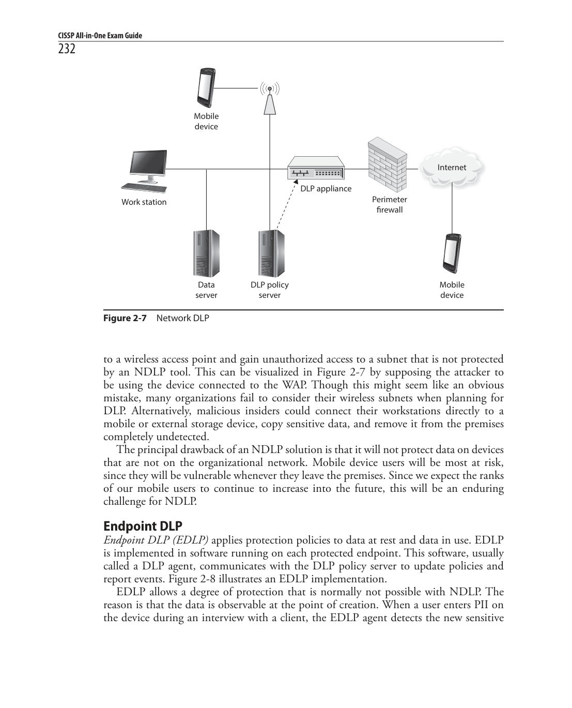
Figure 2-7Network DLP
to a wireless access point and gain unauthorized access to a subnet that is not protected by an NDLP tool. This can be visualized in Figure 2-7 by supposing the attacker to be using the device connected to the WAP. Though this might seem like an obvious mistake, many organizations fail to consider their wireless subnets when planning for DLP. Alternatively, malicious insiders could connect their workstations directly to a mobile or external storage device, copy sensitive data, and remove it from the premises completely undetected. The principal drawback of an NDLP solution is that it will not protect data on devices that are not on the organizational network. Mobile device users will be most at risk, since they will be vulnerable whenever they leave the premises. Since we expect the ranks of our mobile users to continue to increase into the future, this will be an enduring challenge for NDLP.
Endpoint DLP
Endpoint DLP (EDLP)applies protection policies to data at rest and data in use. EDLP is implemented in software running on each protected endpoint. This software, usually called a DLP agent, communicates with the DLP policy server to update policies and report events. Figure 2-8 illustrates an EDLP implementation. EDLP allows a degree of protection that is normally not possible with NDLP. The reason is that the data is observable at the point of creation. When a user enters PII on the device during an interview with a client, the EDLP agent detects the new sensitive
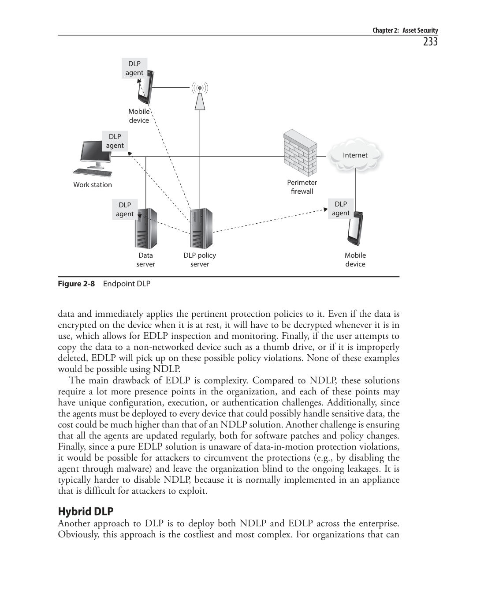
Figure 2-8Endpoint DLP
data and immediately applies the pertinent protection policies to it. Even if the data is encrypted on the device when it is at rest, it will have to be decrypted whenever it is in use, which allows for EDLP inspection and monitoring. Finally, if the user attempts to copy the data to a non-networked device such as a thumb drive, or if it is improperly deleted, EDLP will pick up on these possible policy violations. None of these examples would be possible using NDLP. The main drawback of EDLP is complexity. Compared to NDLP, these solutions require a lot more presence points in the organization, and each of these points may have unique configuration, execution, or authentication challenges. Additionally, since the agents must be deployed to every device that could possibly handle sensitive data, the cost could be much higher than that of an NDLP solution. Another challenge is ensuring that all the agents are updated regularly, both for software patches and policy changes. Finally, since a pure EDLP solution is unaware of data-in-motion protection violations, it would be possible for attackers to circumvent the protections (e.g., by disabling the agent through malware) and leave the organization blind to the ongoing leakages. It is typically harder to disable NDLP, because it is normally implemented in an appliance that is difficult for attackers to exploit.
Hybrid DLP
Another approach to DLP is to deploy both NDLP and EDLP across the enterprise. Obviously, this approach is the costliest and most complex. For organizations that can
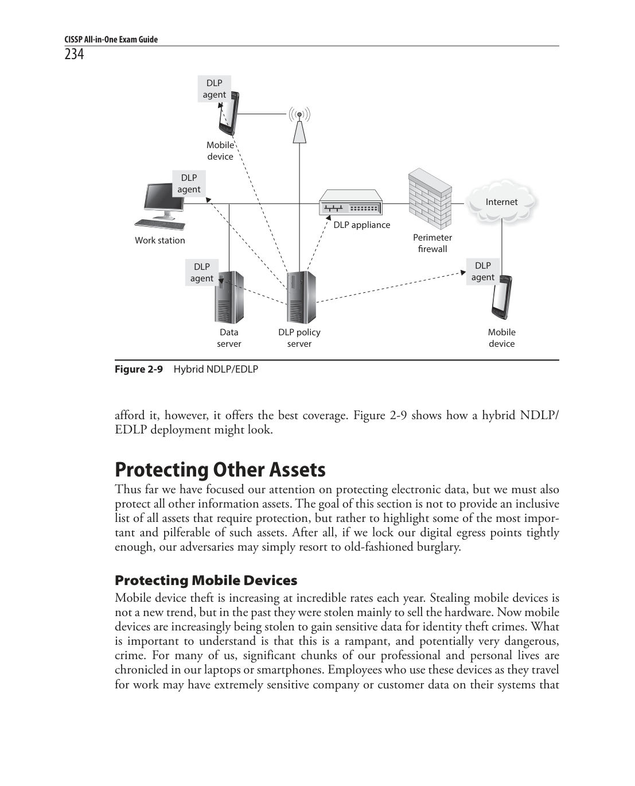
Figure 2-9Hybrid NDLP/EDLP
afford it, however, it offers the best coverage. Figure 2-9 shows how a hybrid NDLP/ EDLP deployment might look.
Protecting Other Assets
Thus far we have focused our attention on protecting electronic data, but we must also protect all other information assets. The goal of this section is not to provide an inclusive list of all assets that require protection, but rather to highlight some of the most important and pilferable of such assets. After all, if we lock our digital egress points tightly enough, our adversaries may simply resort to old-fashioned burglary.
Protecting Mobile Devices
Mobile device theft is increasing at incredible rates each year. Stealing mobile devices is not a new trend, but in the past they were stolen mainly to sell the hardware. Now mobile devices are increasingly being stolen to gain sensitive data for identity theft crimes. What is important to understand is that this is a rampant, and potentially very dangerous, crime. For many of us, significant chunks of our professional and personal lives are chronicled in our laptops or smartphones. Employees who use these devices as they travel for work may have extremely sensitive company or customer data on their systems that
can easily fall into the wrong hands. The following list provides many of the protection mechanisms that can be used to protect mobile devices and the data they hold:
Inventory all mobile devices, including serial numbers, so they can be properly
- identified if they are stolen and then recovered.
Harden the operating system by applying baseline secure configurations.
- Password-protect the BIOS on laptops.
- Register all devices with their respective vendors, and file a report with the
- vendor when a device is stolen. If a stolen device is sent in for repairs after it is stolen, it will be flagged by the vendor if you have reported the theft.
Do not check mobile devices as luggage when flying. Always carry them on
- withyou.
Never leave a mobile device unattended, and carry it in a nondescript carrying case.
- Engrave the device with a symbol or number for proper identification.
- Use a slot lock with a cable to connect a laptop to a stationary object
- wheneverpossible.
Back up all data on mobile devices to an organizationally controlled repository.
- Encrypt all data on a mobile device.
- Enable remote wiping of data on the device.
- Tracing software can be installed so that your device can “phone home” if it is taken from you. Several products offer this tracing capability. Once installed and configured, the software periodically sends in a signal to a tracking center or allows you to track it through a website or application. If you report that your device has been stolen, the vendor of this software may work with service providers and law enforcement to track down and return your laptop.
Paper Records
It is easy to forget that most organizations still process information on paper records. The fact that this is relatively rare compared to the volume of their electronic counterparts is little consolation when a printed e-mail with sensitive information finds its way into the wrong hands and potentially causes just as much damage. Here are some principles to consider when protecting paper records:
Educate your staff on proper handling of paper records.
- Minimize the use of paper records.
- Ensure workspaces are kept tidy so it is easy to tell when sensitive papers are
- left exposed, and routinely audit workspaces to ensure sensitive documents are notexposed.
Lock away all sensitive paperwork as soon as you are done with it.
- Prohibit taking sensitive paperwork home.
- Label all paperwork with its classification level. Ideally, also include its owner’s
- name and disposition (e.g., retention) instructions.
Conduct random searches of employees’ bags as they leave the office to ensure
- sensitive materials are not being taken home.
Destroy unneeded sensitive papers using a crosscut shredder. For very sensitive
- papers, consider burning them instead.
Safes
A company may have need for a safe. Safes are commonly used to store backup data tapes, original contracts, or other types of valuables. The safe should be penetration resistant and provide fire protection. The types of safes an organization can choose from are
Wall safeEmbedded into the wall and easily hidden
- Floor safeEmbedded into the floor and easily hidden
- ChestsStand-alone safes
- DepositoriesSafes with slots, which allow the valuables to be easily slipped in
- VaultsSafes that are large enough to provide walk-in access
- If a safe has a combination lock, it should be changed periodically, and only a small subset of people should have access to the combination or key. The safe should be in a visible location, so anyone who is interacting with the safe can be seen. The goal is to uncover any unauthorized access attempts. Some safes have passive or thermal relocking functionality. If the safe has apassive relockingfunction, it can detect when someone attempts to tamper with it, in which case extra internal bolts will fall into place to ensure it cannot be compromised. If a safe has athermal relockingfunction, when a certain temperature is met (possibly from drilling), an extra lock is implemented to ensure the valuables are properly protected.
Summary
Protecting assets, particularly information, is critical to any organization and must be incorporated into the comprehensive risk management process described in the previous chapter. This protection will probably require different controls at different phases in the information life cycle, so it is important to consider phase-specific risks when selecting controls. Rather than trying to protect all information equally, our organizations need classification standards that help us identify, handle, and protect data according to its sensitivity and criticality. We must also consider the roles played by various people in the organization. From the senior executives to the newest and most junior member of the team, everyone who interacts with our information has (and should understand) specific responsibilities with regard to protecting our assets.
A key responsibility is the protection of privacy of personal information. For various legal, regulatory, and operational reasons, we want to limit how long we hold on to personal information. There is no one-size-fits-all approach to data retention, so it is incumbent on the organization’s leadership to consider a multitude of factors when developing privacy and data retention policies. These policies, in turn, should drive riskbased controls, baselines, and standards applied to the protection of our information. A key element in applying controls needs to be the proper use of strong cryptography.
Quick Tips
Information goes through a life cycle that starts with its acquisition and ends
- with its disposal.
Each phase of the information life cycle requires different considerations when
- assessing risks and selecting controls.
New information is prepared for use by adding metadata, including
- classificationlabels.
Ensuring the consistency of data must be a deliberate process in organizations
- that use data replication.
Data aggregation may lead to an increase in classification levels.
- Cryptography can be an effective control at all phases of the information life cycle.
- The data retention policy drives the timeframe at which information transitions
- from the archival phase to the disposal phase of its life cycle.
Information classification corresponds to the information’s value to the
- organization.
Each classification should have separate handling requirements and procedures
- pertaining to how that data is accessed, used, and destroyed.
Senior executives are ultimately responsible to the shareholders for the successes
- and failures of their corporations, including security issues.
The data owner is the manager in charge of a specific business unit and
- is ultimately responsible for the protection and use of a specific subset of information.
Data owners specify the classification of data, and data custodians implement and
- maintain controls to enforce the set classification levels.
The data retention policy must consider legal, regulatory, and operational
- requirements.
The data retention policy should address what data is to be retained, where, how,
- and for how long.
238
Electronic discovery (e-discovery) is the process of producing for a court or
- external attorney all electronically stored information (ESI) pertinent to a legalproceeding.
Normal deletion of a file does not permanently remove it from media.
- NIST SP 800-88, Revision 1, “Guidelines for Media Sanitization,” describes the
- best practices for combating data remanence.
Overwriting data entails replacing the 1’s and 0’s that represent it on storage
- media with random or fixed patterns of 1’s and 0’s to render the original data unrecoverable.
Degaussing is the process of removing or reducing the magnetic field patterns on
- conventional disk drives or tapes.
Privacy pertains to personal information, both from your employees and
- yourcustomers.
Generally speaking, organizations should collect the least amount of private
- personal data required for the performance of their business functions.
Data at rest refers to data that resides in external or auxiliary storage devices, such
- as hard drives or optical discs.
Every major operating system supports whole-disk encryption, which is a good
- way to protect data at rest.
Data in motion is data that is moving between computing nodes over a data
- network such as the Internet.
TLS, IPSec, and VPNs are typical ways to use cryptography to protect data
- inmotion.
Data in use is the term for data residing in primary storage devices, such as
- volatile memory (e.g., RAM), memory caches, or CPU registers.
A data leak means that the confidentiality of the data has been compromised.
- Data leak prevention (DLP) comprises the actions that organizations take to
- prevent unauthorized external parties from gaining access to sensitive data.
Network DLP (NDLP) applies data protection policies to data in motion.
- Endpoint DLP (EDLP) applies data protection policies to data at rest and
- data in use.
Mobile devices are easily lost or stolen and should proactively be configured to
- mitigate the risks of data loss or leakage.
Paper products oftentimes contain information that deserves controls
- commensurate to the sensitivity and criticality of that information.
Questions
Please remember that these questions are formatted and asked in a certain way for a reason. Keep in mind that the CISSP exam is asking questions at a conceptual level. Questions may not always have the perfect answer, and the candidate is advised against always looking for the perfect answer. Instead, the candidate should look for the best answer in the list.
1.Which of the following statements is true about the information life cycle? A.The information life cycle begins with its archival and ends with its classification. B.Most information must be retained indefinitely. C.The information life cycle begins with its acquisition/creation and ends with its disposal/destruction. D.Preparing information for use does not typically involve adding metadata to it. 2.Ensuring data consistency is important for all the following reasons,except A.Replicated data sets can become desynchronized. B.Multiple data items are commonly needed to perform a transaction. C.Data may exist in multiple locations within our information systems. D.Multiple users could attempt to modify data simultaneously. 3.Which of the following makes the most sense for a single organization’s classification levels for data? A.Unclassified, Secret, Top Secret B.Public, Releasable, Unclassified C.Sensitive, Sensitive But Unclassified (SBU), Proprietary D.Proprietary, Trade Secret, Private 4.Which of the following is the most important criterion in determining the classification of data? A.The level of damage that could be caused if the data were disclosed B.The likelihood that the data will be accidentally or maliciously disclosed C.Regulatory requirements in jurisdictions within which the organization is notoperating D.The cost of implementing controls for the data 5.The effect of data aggregation on classification levels is best described by which of the following? A.Data classification standards apply to all the data within an organization. B.Aggregation is a disaster recovery technique with no effect on classification. C.A low-classification aggregation of data can be deconstructed into higherclassification data items. D.Items of low-classification data combine to create a higher-classification set.
6.Who bears ultimate responsibility for the protection of assets within the organization? A.Data owners B.Cyber insurance providers C.Senior management D.Security professionals 7.During which phase or phases of the information life cycle can cryptography be an effective control? A.Use B.Archival C.Disposal D.All the above 8.A transition into the disposal phase of the information life cycle is most commonly triggered by A.Senior management B.Insufficient storage C.Acceptable use policies D.Data retention policies 9.Information classification is most closely related to which of the following? A.The source of the information B.The information’s destination C.The information’s value D.The information’s age 10.The data owner is most often described by all of the followingexcept A.Manager in charge of a business unit B.Ultimately responsible for the protection of the data C.Financially liable for the loss of the data D.Ultimately responsible for the use of the data 11.Data at rest is commonly A.Using a RESTful protocol for transmission B.Stored in registers C.Being transmitted across the network D.Stored in external storage devices
12.Data in motion is commonly A.Using a RESTful protocol for transmission B.Stored in registers C.Being transmitted across the network D.Stored in external storage devices 13.Data in use is commonly A.Using a RESTful protocol for transmission B.Stored in registers C.Being transmitted across the network D.Stored in external storage devices 14.Who has the primary responsibility of determining the classification level for information? A.The functional manager B.Senior management C.The owner D.The user 15.If different user groups with different security access levels need to access the same information, which of the following actions should management take? A.Decrease the security level on the information to ensure accessibility and usability of the information. B.Require specific written approval each time an individual needs to access the information. C.Increase the security controls on the information. D.Decrease the classification label on the information. 16.What should management consider the most when classifying data? A.The type of employees, contractors, and customers who will be accessing thedata B.Availability, integrity, and confidentiality C.Assessing the risk level and disabling countermeasures D.The access controls that will be protecting the data 17.Who is ultimately responsible for making sure data is classified and protected? A.Data owners B.Users C.Administrators D.Management
18.Which of the following requirements should the data retention policy address? A.Legal B.Regulatory C.Operational D.All the above 19.Which of the following isnotaddressed by the data retention policy? A.What data to keep B.For whom data is kept C.How long data is kept D.Where data is kept 20.Which of the following best describes an application of cryptography to protect data at rest? A.VPN B.Degaussing C.Whole-disk encryption D.Up-to-date antivirus software 21.Which of the following best describes an application of cryptography to protect data in motion? A.Testing software against side-channel attacks B.TLS C.Whole-disk encryption D.EDLP 22.Which of the following best describes the mitigation of data remanence by a physical destruction process? A.Replacing the 1’s and 0’s that represent data on storage media with random or fixed patterns of 1’s and 0’s B.Converting the 1’s and 0’s that represent data with the output of a cryptographic function C.Removing or reducing the magnetic field patterns on conventional disk drives or tapes D.Exposing storage media to caustic or corrosive chemicals that render it unusable
23.Which of the following best describes the mitigation of data remanence by a degaussing destruction process? A.Replacing the 1’s and 0’s that represent data on storage media with random or fixed patterns of 1’s and 0’s B.Converting the 1’s and 0’s that represent data with the output of a cryptographic function C.Removing or reducing the magnetic field patterns on conventional disk drives or tapes D.Exposing storage media to caustic or corrosive chemicals that render it unusable 24.Which of the following best describes the mitigation of data remanence by an overwriting process? A.Replacing the 1’s and 0’s that represent data on storage media with random or fixed patterns of 1’s and 0’s B.Converting the 1’s and 0’s that represent data with the output of a cryptographic function C.Removing or reducing the magnetic field patterns on conventional disk drives or tapes D.Exposing storage media to caustic or corrosive chemicals that render itunusable
Answers
1.C.Although various information life-cycle models exist, they all begin with the creation or acquisition of the information and end with its ultimate disposal (typically destruction). 2.B.Although it is typically true that multiple data items are needed for a transaction, this has much less to do with the need for data consistency than do the other three options. Consistency is important because we oftentimes keep multiple copies of a given data item. 3.A.This is a typical set of classification levels for government and military organizations. Each of the other options has at least two terms that are synonymous or nearly synonymous. 4.A.There are many criteria for classifying information, but it is most important to focus on the value of the data or the potential loss from its disclosure. The likelihood of disclosure, irrelevant jurisdictions, and cost considerations should not be central to the classification process.
5.D.Data aggregation can become a classification issue whenever someone can combine data items and end up with a higher-classification aggregate. For instance, a person’s name, address, phone number, or date of birth are normally not PII by themselves. However, when combined, they do become PII under the definition of most jurisdictions with applicable laws. 6.C.Senior management always carries the ultimate responsibility for the organization. 7.D.Cryptography can be an effective control at every phase in the information life cycle. During information acquisition, a cryptographic hash can certify its integrity. When sensitive information is in use or in archives, encryption can protect it from unauthorized access. Finally, encryption can be an effective means of destroying the data. 8.D.Data retention policies should be the primary reason for the disposal of most of our information. Senior management or lack of resources should seldom, if ever, be the reason we dispose of data, while acceptable use policies have little, if anything, to do with it. 9.C.Information classification is very strongly related to the information’s value and/or risk. For instance, trade secrets that are the key to a business’s success are highly valuable, which will lead to a higher classification level. Similarly, information that could severely damage a company’s reputation presents a high level of risk and is similarly classified at a higher level. 10.C.The data owner is the manager in charge of a specific business unit, and is ultimately responsible for the protection and use of a specific subset of information. In most situations, this person is not financially liable for the loss of his or her data. 11.D.Data at rest is characterized by residing in secondary storage devices such as disk drives, DVDs, or magnetic tapes. Registers are temporary storage within the CPU and are used for data storage only when the data is being used. 12.C.Data in motion is characterized by network or off-host transmission. The RESTful protocol, while pertaining to a subset of data on a network, is not as good an answer as option C. 13.B.Registers are used only while data is being used by the CPU, so when data is resident in registers, it is, by definition, in use. 14.C.A company can have one specific data owner or different data owners who have been delegated the responsibility of protecting specific sets of data. One of the responsibilities that goes into protecting this information is properly classifying it. 15.C.If data is going to be available to a wide range of people, more granular security should be implemented to ensure that only the necessary people access the data and that the operations they carry out are controlled. The security implemented can come in the form of authentication and authorization technologies, encryption, and specific access control mechanisms.
16.B.The best answer to this question is B, because to properly classify data, the data owner must evaluate the availability, integrity, and confidentiality requirements of the data. Once this evaluation is done, it will dictate which employees, contractors, and users can access the data, which is expressed in answer A. This assessment will also help determine the controls that should be put into place. 17.D.The key to this question is the use of the word “ultimately.” Though management can delegate tasks to others, it is ultimately responsible for everything that takes place within a company. Therefore, it must continually ensure that data and resources are being properly protected. 18.D.The data retention policy should follow the laws of any jurisdiction within which the organization’s data resides. It must similarly comply with any regulatory requirements. Finally, the policy must address the organization’s operational requirements. 19.B.The data retention policy should address what data to keep, where to keep it, how to store it, and for how long to keep it. The policy is not concerned with “for whom” the data is kept. 20.C.Data at rest is best protected using whole-disk encryption on the user workstations or mobile computers. None of the other options apply to data at rest. 21.B.Data in motion is best protected by network encryption solutions such as TLS, VPN, or IPSec. None of the other options apply to data in motion. 22.D.Two of the most common approaches to destroying data physically involve shredding the storage media or exposing it to corrosive or caustic chemicals. In certain highly sensitive government organizations, these approaches are used in tandem to make the risk of data remanence negligible. 23.C.Degaussing is typically accomplished by exposing magnetic media (such as hard disk drives or magnetic tapes) to powerful magnetic fields in order to change the orientation of the particles that physically represent 1’s and 0’s. 24.A.Data remanence can be mitigated by overwriting every bit on the storage medium. This is normally accomplished by writing all 0’s, or all 1’s, or a fixed pattern of them, or a random sequence of them. Better results can be obtained by repeating the process with different patterns multiple times.